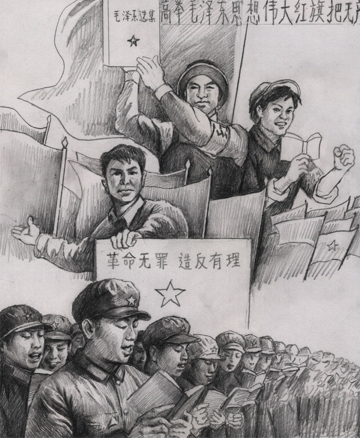
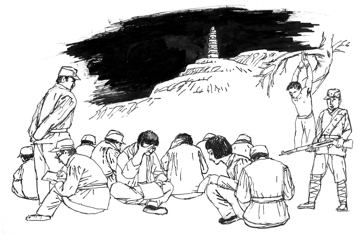

Cửu Bình 2: ĐCSTQ xuất sinh như thế nào? (audio)
Tài liệu gốc: http://dajiyuan.com/gb/4/11/21/n723946.htm
0 – Dẫn nhập
1 – Đảng cộng sản là gì?
2 – Đảng cộng sản Trung Quốc xuất sinh như thế nào?
3 – Chính quyền bạo lực của Đảng cộng sản Trung Quốc.
4 – Đảng cộng sản, một lực lượng phản vũ trụ.
5 – Giang Trạch Dân và Đảng cộng sản Trung Quốc lợi dụng lẫn nhau để đàn áp Pháp Luân Công.
6 – Đảng cộng sản Trung Quốc phá hoại văn hoá dân tộc.
7 – Lịch sử giết chóc của Đảng cộng sản Trung Quốc.
8 – Bản chất tà giáo của Đảng cộng sản Trung Quốc.
9 – Bản tính lưu manh của Đảng cộng sản Trung Quốc.
Lời mở đầu
|
 |
Theo cuốn Chiết văn giải tự [1], thì chữ ‘đảng’ có nghĩa là ‘bè đảng’, và theo mẫu tự truyền thống là ghép từ chữ ‘thượng’ ở trên với chữ ‘hắc’ ở dưới, tức là ‘thượng hắc’, ngụ ý là một bè đảng toàn chủ trương những điều hắc ám. Trong tiếng Hán, từ ‘đảng’, hoặc ‘đảng nhân’ mang nghĩa chỉ trích. Đức Khổng Tử từng nói: “Kẻ quân tử dẫu kiêu hãnh cũng không tranh chấp, dẫu quần tụ cũng không kéo bè kết đảng”, và có giải thích trong Luận Ngữ của mình rằng những kẻ kéo bè kết đảng như thế là để bao che nhau cùng làm điều xấu. Trong lịch sử Trung Quốc, những nhóm chính trị quy mô nhỏ thường bị gọi là ‘băng đảng’. Trong văn hoá Trung Quốc, những từ như ‘cẩu đảng’, ‘băng đảng’, ‘kết đảng’… đều mang nghĩa xấu.
Vậy, tại sao lại xuất hiện ở Trung Quốc một tổ chức tự nhận là ‘Đảng Cộng sản’, không những thế lại thâu đoạt chính quyền? Đảng Cộng sản Trung Quốc xưa nay không ngừng rót vào tai người dân những thứ như: Nhân dân Trung Hoa đã chọn Đảng, không có Đảng thì không có Trung Quốc hôm nay…
Có đúng là dân tộc Trung Hoa đã chọn Đảng Cộng sản Trung Quốc, hay Đảng là do cấu bè kết phái mà thành? Rồi họ bức bách nhân dân phải nghe theo tuyên truyền của họ? Chúng ta hãy cùng lật lại lịch sử để tìm câu trả lời.
Từ cuối đời Mãn Thanh cho đến đầu thời kỳ Dân Quốc (1911–1949), đất nước Trung Hoa cổ xưa phải nếm trải biết bao chấn động từ bên ngoài và cải cách lớn ở bên trong, xã hội hỗn loạn, người dân lầm than. Có nhiều phần tử trí thức và sĩ phu yêu nước nung nấu hoài bão cứu nước cứu dân. Nhưng trong nạn lớn của dân tộc, cái khó bó cái khôn, từ tâm lý thất vọng đã dẫn đến tuyệt vọng. Có bệnh vái tứ phương, có nhiều người trong họ nhìn ra hải ngoại mong tìm linh đan thần dược. Phương thức của Anh không thành, rồi cách thức của Pháp cũng không đạt. Rồi họ chuyển sang phương sách của Nga. Chẳng ngại thuốc độc mà chỉ sốt sắng mong sao nội trong một ngày chấn hưng Trung Quốc.
Cuộc vận động 4 tháng 5 năm 1919 biểu hiện rất rõ tình cảnh bế tắc lúc bấy giờ. Có người đề nghị chủ nghĩa vô chính phủ. Có người đề nghị đả đảo giáo lý nhà Nho. Có người đề nghị du nhập văn hoá nước ngoài. Tóm lại, họ có thái độ phủ định văn hoá Trung Quốc truyền thống, phản đối học thuyết Trung Dung của Khổng Tử. Vì muốn đi tắt đón đầu, họ cho rằng cần đạp đổ tất cả cái gì thuộc về truyền thống. Những phần tử cấp tiến này một mặt không có phương sách cứu nước trong tay, nhưng mặt khác lại duy ý chí và quá tự tin vào chủ thuyết của mình. Họ cho rằng trên thế gian này không còn cách nào cứu chữa, và chỉ tự họ mới có thể tìm được phương sách cải cách con đường phát triển cho tổ quốc. Từ đó dẫn đến nhiệt tình cực đoan vào bạo lực cách mạng.
Kinh nghiệm khác nhau giữa các nhóm trí sĩ yêu nước khác nhau dẫn đến lý luận, học thuyết và lộ tuyến khác nhau. Thế rồi một nhóm trong đó đã gặp người liên lạc của Đảng Cộng sản Liên Xô. Tư tưởng “dùng bạo lực cách mạng để giành chính quyền” trong tư tưởng Mác-Lê rất hoà điệu với lòng sốt sắng và nguyện vọng cứu nước cứu dân thời bấy giờ. Chủ nghĩa Cộng sản, một tư tưởng hoàn toàn xa lạ, đã từ bên ngoài du nhập vào Trung Quốc như vậy đó.
Tổng cộng 13 đại biểu cùng gia nhập trong hội nghị ĐCSTQ đầu tiên. Năm tháng trôi qua, người thì chết, người thì bỏ đi, người thì theo quân Nhật và trở thành Hán gian, người thì bỏ ĐCSTQ để chuyển sang Quốc Dân Đảng,… cho đến năm 1949 khi ĐCSTQ giành được quyền lực, thì chỉ còn 2 trong số 13 đảng viên lứa đầu trụ lại trong Đảng, đó là Mao Trạch Đông và Đổng Tất Vũ. Bây giờ xét lại, không thể biết được là những sáng lập viên Đảng Cộng sản Trung Quốc lúc sơ khởi có hiểu ra được hay không rằng vị ‘thần linh’ họ rước về bấy giờ thực ra là một con quỷ, rằng ‘linh dược’ họ mang về cho dân tộc thực ra là một chất độc chết người.
Chỉ một thời gian ngắn sau khi giành thắng lợi cách mạng, những người của chính quyền Nga Sô (Bôn-sê-vích) đã có dã tâm dòm ngó Trung Quốc. Năm 1920, Liên Xô thành lập Ban Viễn Đông tại Xi-bê-ri — một chi nhánh của Cộng sản Quốc tế đệ tam — với nhiệm vụ quản lý và thành lập Đảng Cộng sản tại Trung Quốc cũng như các nước khác quanh vùng. Ngay sau ngày thành lập không lâu, Phó Ban Gờ-ri-go-ri Voi-tin-xki đã đến Bắc Kinh liên hệ với tiên phong Lý Đại Chiêu, và Lý Đại Chiêu đã giới thiệu Voi-tin-xky đến Thượng Hải gặp mặt và hội đàm với Trần Độc Tú. Tháng 8 năm 1920, Voi-tin-xky, Trần Độc Tú, Lý Hán Tuấn, Trấm Huyền Lư, Du Tú Tùng, Thi Tồn Thống, cùng một số vị khác bắt đầu chuẩn bị thành lập Đảng Cộng sản Trung Quốc.
Tháng 6 năm 1921, Trương Thái Lôi đã đến I-rơ-kút-xkơ ở Xi-bê-ri để đệ trình lên Cộng sản Quốc tế đệ tam thông qua Ban Viễn Đông bản kế hoạch thành lập Đảng Cộng sản Trung Quốc (ĐCSTQ) như một chi bộ của Cộng sản Quốc tế đệ tam. Ngày 23 tháng 7 năm 1921, với sự trợ giúp của Ni-côn-xky và Ma-rinh từ Ban Viễn Đông, Đảng Cộng sản Trung Quốc đã chính thức thành lập.
Như vậy, Chủ nghĩa Cộng sản đã được đưa vào Trung Quốc như một thực nghiệm. Từ đó đến nay Đảng Cộng sản Trung Quốc đã lấn át tất cả, đè bẹp tất cả, mở đầu một thời kỳ đầy đau thương cho dân tộc Trung Hoa, với tai hoạ này nối tiếp tai hoạ khác.
******************
I. Quá trình dựng nghiệp của ĐCSTQ là quá trình liên tục tích tụ tà ác
Ở một đất nước 5 ngàn năm lịch sử như Trung Quốc, thì gieo cấy một Đảng Cộng sản vốn không chút gì ăn nhập với truyền thống dân tộc, đem con quỷ ngoại lai ấy về nuôi là một điều không dễ. Lịch sử dựng nghiệp của Đảng Cộng sản Trung Quốc — từ khi chào đời cho đến lúc thâu đoạt và kiến lập chính quyền — là một quá trình liên tục tích tụ tà ác. Trong quá trình ấy, ĐCSTQ hấp thu và dung dưỡng đủ cả chín nhân tố của một con quỷ cộng sản tà ác: tà ác, lừa dối, xúi bẩy, lưu manh, gián điệp, trấn lột, đấu tranh, diệt chủng, khống chế. Những nhân tố di truyền ấy được kế thừa đầy đủ, và qua mỗi lần thách thức, lại càng phát triển thậm tệ hơn.
Nhân tố di truyền 1: Tà ác — Khoác lên tấm choàng tà vạy của chủ nghĩa Mác-Lê
Điều đầu tiên ĐCSTQ thấy hấp dẫn ở chủ nghĩa Mác chính là: “Dùng bạo lực cách mạng đập tan chế độ cũ, tạo dựng chính quyền chuyên chính vô sản”. Đó chính là cội rễ tà vạy trong học thuyết Mác-Lê.
Kinh tế học trong chủ nghĩa duy vật của Các-Mác là lý thuyết kinh tế rất nông cạn dựa trên nghiên cứu về sức sản xuất, quan hệ sản xuất, và giá trị thặng dư. Vào giai đoạn chủ nghĩa tư bản chưa phát triển, Các-Mác đã đưa ra dự đoán phiến diện và thiển cận rằng chủ nghĩa tư bản sẽ sớm diệt vong, rằng giai cấp vô sản sẽ chiến thắng. Thực tế lịch sử đã phủ nhận điều ấy. Chủ nghĩa Mác-Lê chủ trương bạo lực cách mạng và chuyên chính vô sản không có gì khác hơn là áp đặt thể chế chính trị độc tài với giai cấp vô sản làm chủ. Tuyên ngôn Cộng sản đã lấy mâu thuẫn giai cấp và đấu tranh giai cấp làm cơ sở cho quan điểm lịch sử và cốt lõi triết học của Đảng Cộng sản. Người cộng sản đấu tranh là để đập tan mọi đạo đức truyền thống và quan hệ xã hội, và giành lấy chính quyền. Ngay từ khi xuất hiện, Chủ nghĩa Cộng sản đã đối chọi với tất cả những gì truyền thống.
Thiên tính tự nhiên của con người là tẩy chay bạo lực. Bạo lực khiến người ta trở nên bạo ngược. Học thuyết tôn sùng bạo lực của Đảng Cộng sản đều bị con người khắp nơi chối bỏ. Tất cả các hệ tư tưởng, triết học, truyền thống trong quá khứ đều không có chủ trương nào như thế cả. Hệ thống cộng sản tôn sùng khủng bố đúng là từ không trung đột nhiên xuất hiện trên trái đất.
Quan niệm tà ác ấy có tiên đề là “nhân định thắng thiên”: con người nhất định chiến thắng trời, chinh phục tự nhiên, cải tạo thế giới. Những khẩu hiệu như “giải phóng toàn nhân loại”, “thế giới đại đồng” của chủ nghĩa cộng sản đã thu hút và lừa dối được không ít người, nhất là những ai duy lý trí cực đoan, hoặc mang khát vọng lập chiến tích ghi danh lịch sử. Họ quên rằng lưới trời lồng lộng, thưa mà khó lọt, nên họ sẵn sàng bất chấp tất cả. Những thứ hoang tưởng như xây dựng “thiên đường tại nhân gian”, “làm theo năng lực, hưởng theo nhu cầu” đã làm họ mù quáng tin rằng hiện đại hoá sẽ đem lại tất cả. Họ miệt thị giá trị văn hoá truyền thống, coi thường sinh mạng. Thực ra họ đã tự hạ thấp giá trị nhân phẩm của chính mình. Cái vỏ ‘cống hiến vẻ vang’ cho Đảng ấy thực ra là một tấm áo choàng cực kỳ tà vạy.
Đảng lấy “Thế giới Cộng sản Chủ nghĩa” làm mục đích tối hậu, làm chân lý để phụng thờ: “sục sôi nhiệt huyết trong tim đầy chứa rồi, quyết phen này sống chết mà thôi, chế độ xưa ta mau phá sạch tan tành…” [2]. Đảng tuyên truyền triết lý hoang tưởng ấy làm thủ đoạn đảo ngược quan hệ giữa con người và trời đất, cắt đứt chính họ với tổ tông, phá sạch huyết mạch truyền thống. Từ đó khiến người ta hiến thân cho chủ nghĩa cộng sản hoang tưởng, và bồi đắp sức tàn sát của Đảng.
Nhân tố di truyền 2: Lừa dối — Điều bắt buộc khi quỷ sứ muốn giả dạng Thần linh
Kẻ tà luôn nói dối. Để lợi dụng công nhân, Đảng tán dương họ thành “giai cấp tiên tiến nhất”, “chí công vô tư”, “giai cấp lãnh đạo”, “đội quân tiên phong của cách mạng vô sản”… Để lợi dụng nông dân, Mao Trạch Đông vuốt ve “không có bần nông thì không có cách mạng, đả kích nông dân là đả kích cách mạng” rồi hứa hẹn “dân cày có ruộng”… Đến lúc cần giai cấp tư sản ủng hộ, Đảng thổi phồng họ lên thành “bạn đồng hành của cách mạng vô sản” rồi hứa hẹn một chế độ “dân chủ cộng hoà”. Khi Đảng Cộng sản Trung Quốc gặp nguy cơ suýt bị Quốc Dân Đảng tiêu diệt, bèn hô hào “người Trung Quốc không hại người Trung Quốc”. Kết quả là gì? Kháng chiến Trung-Nhật vừa kết thúc, ĐCSTQ gom toàn lực lật đổ chính quyền Quốc Dân Đảng. Thành lập nước không lâu, ĐCSTQ lập tức tiêu diệt giai cấp tư sản, và biến công nhân và nông dân thành giai cấp vô sản triệt để chẳng còn sở hữu chút gì.
‘Thống nhất chiến tuyến’ là thủ đoạn lừa dối điển hình của ĐCSTQ. Để giành thắng lợi trong cuộc nội chiến giữa ĐCSTQ và Quốc Dân Đảng, ĐCSTQ đã thay đổi kế sách trước đó vốn coi địa chủ phú nông là giai cấp thù địch phải giết bỏ, thay bằng “chính sách thống nhất chiến tuyến lâm thời”. Ngày 20 tháng 7 năm 1947, Mao Trạch Đông ra chỉ thị: “ngoài một số ít những phần tử phản động, thì phải có thái độ hoà hoãn nới lỏng với giai cấp địa chủ… giảm bớt kẻ thù”. Nhưng sau khi ĐCSTQ giành được chính quyền, địa chủ phú nông không thoát khỏi bị “tiêu diệt triệt để quần thể”.
Nói một đằng làm một nẻo. Khi Đảng Cộng sản Trung Quốc cần lợi dụng Quốc Dân Đảng, liền kêu gọi “sống chung lâu bền, giúp nhau quản lý, thành thật song phương, vinh nhục có nhau”. Sau khi giành chính quyền năm 1949, thì tất cả dân sĩ nào đề cập đến dân chủ đều bị khép vào tội theo cánh hữu làm phản và bị thanh trừng. Bất kể ai không đồng ý hay không theo tư tưởng, hành xử, và tổ chức của Đảng đều bị tiêu diệt. Các-mác, Lê-nin, và các lãnh tụ ĐCSTQ đều từng tuyên bố thẳng rằng, Đảng Cộng sản là chuyên chính, không chia sẻ quyền lực với bất kể ai hay tổ chức nào khác. Ngay từ đầu, độc tài chuyên chế đã là nhân tố di truyền bất di bất dịch của Đảng Cộng sản. Trong lịch sử ĐCSTQ, Đảng chưa hề một lần nào thật sự chia sẻ quyền lực chính trị với bất kỳ ai, kể cả vào những thời “nới lỏng” nhất.
Bài học lịch sử dạy rằng không thể tin vào bất kể hứa hẹn gì của ĐCSTQ, đừng mong tưởng ĐCSTQ thực hiện cam kết. Ai tin lời ĐCSTQ rồi sẽ có ngày phải trả giá bằng tính mạng của mình.
Nhân tố di truyền 3: Xúi bẩy — Xúi bẩy nhân dân phân nhóm đấu nhau
Lừa dối để reo rắc thù hận. Muốn có đấu tranh thì phải có thù hận. Đâu không có thù hận, thì ĐCSTQ xúi bẩy reo rắc thù hận.
Loại hình chế độ dòng tộc sở hữu đất đai đã ăn sâu vào nông thôn Trung Quốc. Đó là chướng ngại lớn trên con đường kiến thiết chính quyền của ĐCSTQ. Xã hội nông thôn nhìn chung là hài hoà. Quan hệ sở hữu đất đai và thu tô vốn dĩ không có quan hệ đối lập tuyệt đối. Địa chủ quản lý đất đai và cho nông dân thuê đất canh tác, còn nông dân dựa vào đó để sinh sống và nộp tô cho địa chủ. Địa chủ và nông dân dựa vào nhau mà sống qua hàng bao nhiêu thế hệ như thế.
Bản chất đây là một hình thức cộng sinh tự nhiên ở một mức độ nào đó. Nhưng ĐCSTQ bóp méo quan hệ ấy thành quan hệ bóc lột giai cấp, biến họ thành hai giai cấp đối lập. Biến bè bạn thành cừu địch, biến hài hoà thành đấu tranh, biến hợp lý thành vô lý, biến trật tự thành hỗn loạn, biến cộng hoà thành chuyên chế. ĐCSTQ chủ trương tước đoạt tài sản, vừa cướp vừa giết, giết bản thân người địa chủ phú nông ấy, giết người nhà của địa chủ phú nông, rồi giết đến cả gia tộc của địa chủ phú nông. Có nhiều người nông dân không đành lòng theo kẻ cường bạo nên ban ngày thì cướp nhưng đến đêm lại quay lại trả đồ cho gia chủ; rồi bị đội công tác biết được và bị chỉ trích là “thiếu giác ngộ giai cấp”.
Bạch mao nữ vốn là một câu chuyện xưa về tiên nữ, không có liên quan gì đến đấu tranh giai cấp hay áp bức bóc lột gì. Nhưng đội văn công đã cải biên thành kịch nói, ca kịch, rồi cả kịch múa ba-lê, toàn để xúi bẩy thù hận giai cấp.
Hồi Nhật Bản xâm lược Trung Quốc, Đảng Cộng sản đã không đánh Nhật thì chớ, lại còn công kích rằng chính phủ Quốc Dân Đảng bán nước không đánh Nhật, thậm chí ngay lúc đất nước lâm nguy, còn xúi bẩy nhân dân chống lại Quốc Dân Đảng.
Xúi bẩy cừu hận giữa một nhóm người dân này với một nhóm người dân khác là một thủ đoạn kinh điển của ĐCSTQ. Công thức ‘95:5’ cũng từ đó mà ra. Các thế hệ lãnh đạo sau này của ĐCSTQ đều dùng nó trong các phong trào chính trị, cho đến nay đã phát triển thành một thủ đoạn nhuần nhuyễn. ĐCSTQ chia dân chúng thành hai phần, 95% và 5%, trong đó rơi vào phần 95% thì an toàn vô sự còn rơi vào phần 5% thì bị coi như kẻ thù phải bị thanh trừng. Vì sợ hãi và muốn an toàn, người dân đấu đá để chuyển sang phần 95%. Đấu đá ấy gây nên thù hận sâu sắc trong dân chúng. Nhưng qua mỗi chiến dịch đàn áp ấy, ĐCSTQ củng cố được quyền lực và nô dịch người dân bằng khủng bố.
Nhân tố di truyền 4: Lưu manh — Lấy lưu manh cặn bã xã hội lập thành đội ngũ cơ bản
Lưu manh là cơ sở của tà vạy, muốn tà thì phải dựa vào lưu manh cặn bã của xã hội. Những cuộc cách mạng thường đều xuất phát từ những phần tử lưu manh cặn bã trong xã hội đứng lên khởi nghĩa mà thành. Ví dụ kinh điển là ‘Công xã Pa-ri’, mà thực tế chính là xã hội do bọn lưu manh chuyên đốt phá giết người làm lãnh đạo. Ngay Các-mác cũng khinh rẻ giai cấp vô sản lưu manh này [3], trong Tuyên ngôn Cộng sản, có đoạn viết “Còn tầng lớp vô sản lưu manh, cái sản phẩm tiêu cực ấy của sự thối rữa của những tầng lớp bên dưới nhất trong xã hội cũ, thì đây đó, có thể được cách mạng vô sản lôi cuốn vào phong trào, nhưng điều kiện sinh hoạt của họ lại khiến họ sẵn sàng bán mình cho những mưu đồ của phe phản động.” Còn nông dân, theo Các-mác và Ăng-ghen, được coi là phân tán và bản tính ngu muội nên thậm chí “không xứng là một giai cấp”.
Không dừng lại ở tư tưởng của Các-mác, Đảng Cộng sản Trung Quốc đã phát triển xa hơn nữa về phương diện tà ác này. Mao Trạch Đông nói: “lưu manh cặn bã là tầng lớp vứt đi của xã hội, nhưng trong cách mạng nông thôn, thì họ là dũng cảm nhất, triệt để nhất, kiên quyết nhất” (Mao 1927). Vô sản lưu manh là đội ngũ gia tăng bạo lực và duy trì chính quyền ở nông thôn cho ĐCSTQ vào thời kỳ đầu. Từ ‘cách mạng’ trong tiếng Hán có nghĩa là ‘giết’, và thực tế nó diễn ra đúng như vậy. Đối với người dân lương thiện, nó thật kinh khủng và khiếp hãi. Ban đầu ĐCSTQ tự nhận là ‘vô sản lưu manh’, nhưng đến thời Cách mạng Văn hoá, Đảng thảo luận rằng nghe thế quá khủng khiếp khó lọt tai, nên bỏ từ ‘lưu manh’ đi, và tự nhận là người ‘vô sản’.
Bọn lưu manh thường có biểu hiện vô lại một cách ngu xuẩn. Có lần bị chỉ trích là độc tài, quan chức trong Đảng chẳng ngượng mồm trả lời trắng ra rằng: “Thưa quý ông, quý ông nói đúng lắm, chúng tôi chính là như vậy. Qua tất cả những kinh nghiệm mà người Trung Quốc trải qua mấy chục năm nay, đã khiến chúng tôi thực hành nhân dân dân chủ chuyên chính, tức là nhân dân dân chủ độc tài”.
Nhân tố di truyền 5: Gián điệp — Gián điệp, phản gián, ly gián, mua chuộc
Ngoài những nhân tố kể trên, ĐCSTQ cũng rất thạo ngón nghề gián điệp. Mấy thập kỷ trước đây có ba ‘anh hùng’ điệp viên — Tiền Tráng Phi, Lý Khắc Nông và Hồ Bắc Phong — đều dưới sự chỉ đạo của Trần Canh, Trưởng khoa số 2 Trường Đặc vụ Trung ương của ĐCSTQ. Khi Tiền Tráng Phi là Bí thư Cơ yếu và là tuỳ tùng thân tín của Từ Ân Tăng, Chủ nhiệm khoa Điều tra Trung ương của chính phủ Quốc Dân Đảng, Tiền Tráng Phi đã lấy tin tức tình báo về điều quân chiến lược lần một và hai đến tỉnh Giang Tây của Quốc Dân Đảng, rồi dùng giấy thư của Trung ương Quốc Dân Đảng biên gửi hai lần qua Lý Khắc Nông đến tận tay Chu Ân Lai. Tháng 4 năm 1930, một nhóm đặc vụ hai mặt do khoa Điều tra Trung ương Quốc Dân Đảng tổ chức và chu cấp kinh phí đã được thành lập ở đông bắc Trung Quốc. Về bề nổi, đó là của Quốc Dân Đảng do Tiền Tráng Phi chỉ đạo, nhưng thực chất là của ĐCSTQ dưới chỉ đạo của Trần Canh.
Lý Khắc Nông ban đầu gia nhập Tổng tư lệnh Hải Lục Không quân Quốc Dân Đảng với vai trò người dịch giải điện báo. Lý Khắc Nông khi giải mã điện mật đã phát hiện ra bức điện khẩn liên quan đến việc Cố Thuận Chương [5] bị bắt và làm phản. Tiền Tráng Phi đã chuyển bức điện đã giải mã cho Chu Ân Lai, do vậy một mẻ lớn điệp viên của ĐCSTQ mới thoát lưới.
Dương Đăng Luy, một đặc vụ thân cộng làm ở Khoa Điều tra Trung ương Quốc Dân Đảng ở Thượng Hải. Khi ĐCSTQ thấy đảng viên nào không đáng tin nữa, liền để ông ta bắt và hành quyết. Một cán bộ lão thành ở Hà Nam, do làm mếch lòng một cán bộ của Đảng Cộng sản, liền vì thế mà bị người ta giật dây đánh động rồi bị tống giam vào nhà ngục Quốc Dân Đảng nhiều năm.
Hồi ‘chiến tranh giải phóng’ [6], ĐCSTQ cài được một tình báo viên là người cực kỳ thân cận với Tưởng Giới Thạch [7], đó là Lưu Phỉ, Trung tướng và là Thứ trưởng Bộ Quốc phòng Quốc Dân Đảng. Khi quân lính Quốc Dân Đảng còn chưa nhận được lệnh điều binh, thì tin tình báo đã lọt sang Diên An, Thủ phủ ĐCSTQ. Quân Quốc Dân Đảng chưa đến thì ĐCSTQ đã có kế hoạch phòng bị rồi. Một lần Hùng Hướng Huy, Bí thư và thân tín của Hồ Tôn Nam đã tiết lộ kế hoạch hành quân đánh Diên An cho Chu Ân Lai. Kết quả, khi quân Hồ Tôn Nam đến chỉ thấy Diên An là cái thành không. Chu Ân Lai từng nói: “Mệnh lệnh tác chiến của Tưởng Giới Thạch còn chưa lệnh đến quân sỹ, mà Mao Chủ tịch đã được đọc rồi”.
Nhân tố di truyền 6: Trấn lột — Trấn lột bằng thủ đoạn hoặc bạo lực, thiết lập ‘trật tự mới’
Khi ĐCSTQ dựng lập cát cứ vũ trang Hồng Quân để cai trị quốc gia bằng quân sự, thì vũ khí đạn dược, lương thực y phục đều cần phải có tiền. Do đó, ‘gây quỹ’ trở thành nhiệm vụ lớn. Hồng Quân thường dùng thủ đoạn trấn lột nhà giàu địa phương hoặc cướp ngân hàng, hành tung giống hệt băng cướp. Ví dụ Lý Tiên Niệm, một lãnh đạo trong quân đội Hồng Quân, có nhiệm vụ là điều hành Hồng Quân bắt cóc trong vùng ngạn tây tỉnh Hồ Bắc những người của nhà giàu. Chúng không chỉ bắt một người, mà chọn ra mỗi dòng tộc giàu có, bắt cóc lấy một người. Người bị bắt vẫn được sống và chúng tống tiền nhiều lần gia đình người ta để có tiền phục vụ Hồng Quân. Chỉ đến chừng nào gia đình đã cạn kiệt tiền tài, chúng mới thả người, nhiều khi chỉ còn da bọc xương. Có những trường hợp do bị khủng bố nhiều quá, nên chưa về đến nhà đã chết.
Dưới chiêu bài “đả đảo địa chủ để lấy ruộng”, ĐCSTQ triển khai rộng thủ đoạn trấn lột ra toàn xã hội, vứt bỏ truyền thống và thay vào đó là ‘trật tự mới’ của Đảng. ĐCSTQ làm đủ điều ác, to có nhỏ có, và không làm được điều gì thiện cho nhân dân. ĐCSTQ thường dùng những món lợi nhỏ để kích động một bộ phận nhân dân đấu tố một bộ phận nhân dân khác. Khiến những giá trị thiện đức trong xã hội bị chà đạp, chỉ còn đấu tranh và giết chóc. “Cộng sản đại đồng” thực tế chính là trấn lột giữa ban ngày.
Nhân tố di truyền 7: Đấu tranh — Phá hoại trật tự truyền thống và chế độ quốc gia
Lừa dối, xúi bẩy, lưu manh, gián điệp cũng là để trấn lột và đấu tranh. Triết học của cộng sản là triết học đấu tranh. Cách mạng vô sản không phải là một thứ đấu tranh ẩu đả không tổ chức. Đảng nói: “Nông dân chĩa mũi công kích vào mục tiêu chính là cường hào địa chủ, nhưng qua đó cũng đả phá luôn sạch tất cả các tư tưởng và chế độ cũ, thanh lý tham quan ô lại, cũng như tập quán cũ của làng xóm.” (Mao 1927) Tức là đấu tranh có tổ chức nhằm đập tan những gì là chế độ truyền thống và tập quán của nông thôn.
Đấu tranh cộng sản gồm cả đấu tranh vũ trang. “Cách mạng không phải là mở tiệc đãi khách, không phải là ngâm thơ làm văn, không phải là vẽ tranh thêu hoa, không phải là một thứ gì đó trang nhã kiểu cách, êm đềm thư thả, nhẹ nhàng nho nhã, khiêm cung ôn hoà. Cách mạng là bạo động, là giai cấp này dùng bạo lực lật đổ giai cấp kia.” (Mao 1927) Muốn tước đoạt chính quyền, tất dùng bạo lực. Chỉ mấy thập kỷ sau, ĐCSTQ lại triển khai lối đấu tranh ấy để ‘giáo dục’ thế hệ người dân kế tiếp trong Cách mạng Văn hoá.
Nhân tố di truyền 8: Diệt chủng — Sáng tạo một hệ thống lý luận hoàn chỉnh về diệt chủng
ĐCSTQ làm rất nhiều việc ‘cạn tầu ráo máng’: ĐCSTQ hứa hẹn ‘thiên đường ở thế gian’ cho trí thức, rồi sau đó xếp họ vào ‘cánh hữu’, rồi đến khi Cải cách ruộng đất thì xếp họ vào giai cấp địch nhân [8]. Những việc như cướp đoạt gia tài giai cấp tư bản, tiêu diệt địa chủ và phú nông, phá bỏ hương hoả ở làng xã, đảo lộn chính quyền địa phương, bắt cóc tống tiền những người giàu ở nông thôn, tẩy não tù chính trị, cải tạo giai cấp tiểu thương và tư sản, cài gián điệp và ly gián Quốc Dân Đảng, sinh ra từ Cộng sản Quốc tế nhưng sau đó phản bội Cộng sản Quốc tế, thanh trừng những ai chống đối qua nhiều chiến dịch chính trị hết lượt này đến lượt khác kể từ khi giành được chính quyền năm 1949, đe doạ những đảng viên của mình,…
Tất cả những việc ấy đều xuất phát từ cơ sở lý luận về diệt chủng của ĐCSTQ. Mỗi một chiến dịch chính trị trong lịch sử ĐCSTQ đều là một chiến dịch khủng bố mang tính diệt sạch một quần thể dân chúng. Ngay từ ngày đầu, Đảng Cộng sản đã bắt đầu sáng tạo và hoàn thiện hệ thống lý luận diệt chủng ấy của mình. Tư tưởng diệt chủng ấy xuất phát từ những lý luận cộng sản — giai cấp luận, cách mạng luận, đấu tranh luận, bạo lực luận, chuyên chính luận, vận động luận, chính đảng luận,… — và qua kinh nghiệm triển khai mà trở nên hoàn chỉnh, đến nay đã vượt xa và thâu tóm ‘kết tinh’ của tất cả những cuộc diệt chủng trong lịch sử.
Sự khác biệt đặc sắc nhất trong lý luận diệt chủng của ĐCSTQ là nó diệt sạch tư tưởng với lương tri và nhân tính. Điều ấy phù hợp với tập đoàn thống trị bằng bạo lực này. Nó tiêu diệt bạn vì bạn chống lại nó; nhưng cũng có thể tiêu diệt bạn chính là vì bạn ủng hộ nó. Hễ nó nhận thấy rằng cần phải tiêu diệt ai, thì nó sẽ tìm cách tiêu diệt. Vì vậy ai ai sống ở Trung Quốc cũng sợ Đảng Cộng sản.
Nhân tố di truyền 9: Khống chế — Dùng đảng tính để khống chế toàn đảng, toàn dân
Tất cả những nhân tố trên đều dẫn đến một mục đích: khống chế bằng bạo lực, nô dịch bằng khủng bố. Bản tính tà ác của ĐCSTQ đã khiến mọi lực lượng xã hội trở thành kẻ thù của Đảng. Ngay từ ngày chào đời, ĐCSTQ liên tiếp phải đối mặt với các khủng hoảng và nguy cơ diệt vong, và khủng bố đã trở thành phương sách lợi hại đem lại lợi ích bậc nhất cho Đảng: nó duy trì sự tồn tại và củng cố quyền lực cho Đảng qua những đợt khó khăn. Để bù đắp cho sự suy yếu về quyền lực, ĐCSTQ phải thường xuyên bổ xung những thứ ở bề mặt. Lợi ích của Đảng không phải là nói về lợi ích của các đảng viên, cũng không phải là tổng hoà lợi ích cá thể của các đảng viên; mà là lợi ích của chính tập đoàn ĐCSTQ, nó được đặt lên vị trí tối thượng, cao hơn tất cả những gì là cá nhân.
‘Đảng tính’ là bản chất cực kỳ lợi hại của con quỷ ngoại lai này. Nó có thể khuyếch trương vô hạn, áp chế hoàn toàn ‘nhân tính’, và biến người ta thành một dạng năng lượng hoàn toàn phi nhân tính. Ví dụ Chu Ân Lai và Tôn Bính Văn đã từng là đồng chí. Sau khi Tôn Bính Văn qua đời, Chu Ân Lai đã nhận con gái của Tôn Bính Văn là Tôn Duy Thế làm con nuôi. Đến thời Cách mạng Văn hoá, Tôn Duy Thế bị đấu tố và chết trong nhà ngục do một cái đinh dài được đóng vào đầu. Lệnh bắt Tôn Duy Thế chính là do cha nuôi của cô là Chu Ân Lai ký.
Một trong những lãnh đạo thời đầu của ĐCSTQ hồi chiến tranh Trung–Nhật là Nhậm Bật Thời được Đảng giao nhiệm vụ buôn bán nha phiến (ma tuý). Bấy giờ nha phiến là tượng trưng cho quân xâm lược, vì trước đó quân Anh đã khiến Trung Quốc nhập khẩu nha phiến vừa để rút kiệt tài lực của Trung Quốc, vừa để đầu độc nhân dân Trung Quốc. Vì Đảng, Nhậm Bật Thời đã dám trồng nha phiến trên một vùng rộng lớn, bất chấp nguy cơ bị dân tộc kết tội. Vì từ ‘nha phiến’ quá nhạy cảm, nên bấy giờ ĐCSTQ nói lái thành ‘xà phòng’ khi buôn bán món này. Lợi nhuận thu được từ nha phiến được dùng cho Đảng. Đến kỷ niệm 100 năm ngày sinh Nhậm Bật Thời, một lãnh đạo thế hệ sau của ĐCSTQ đã phát biểu ca ngợi công lao của Nhậm Bật Thời: “Nhậm Bật Thời có tư chất đạo đức rất cao, và là một đảng viên mẫu mực. Ông tin tưởng tuyệt đối vào Đảng, và trung thành tuyệt đối với sự nghiệp của Đảng”.
Trương Tư Đức cũng là một mẫu hình cho đảng tính. ĐCSTQ nói rằng anh ta hy sinh do sập lò gạch, còn người dân nói rằng anh ta chết khi đang chế biến nha phiến. Vì Trương Tư Đức là một người ít lời trong Đoàn Cảnh vệ Trung ương, không bao giờ đòi hỏi thăng chức, nên khi anh chết, mới nói rằng cái chết của anh “nặng tựa Thái Sơn” [9].
Sau này còn có một mẫu hình nữa là Lôi Phong, nổi tiếng với danh hiệu là “chiếc ốc vít không bao giờ han gỉ của cỗ máy cách mạng”. Cả Lôi Phong và Trương Tư Đức đều được lấy làm tấm gương một thời gian dài trong hệ thống giáo dục của ĐCSTQ như những mẫu mực trung thành với Đảng. Ngoài ra cũng có nhiều anh hùng khác được dùng để tuyên truyền “ý chí sắt thép và nguyên tắc của Đảng”.
Sau khi giành chính quyền, Đảng Cộng sản Trung Quốc đã quảng bá rộng khắp nhân tố khống chế tư tưởng con người này. Phải nhìn nhận rằng Đảng đã thành công trong việc biến cả thế hệ nhân dân sau đó nữa thành những “ốc vít” cho mình. Đảng tính được cưỡng chế lên và trở thành một lối tư duy nhất định, một lối hành xử nhất định. Ban đầu, ĐCSTQ chỉ dùng thủ đoạn này trong nội bộ Đảng, nhưng ngay sau đó đã mở rộng quy mô đến toàn quốc. Dưới cái vỏ dân tộc, lối tư duy nhất định và hành vi nhất định ấy thực chất chính là một thủ đoạn tẩy não đại quy mô để người dân phù hợp theo cơ chế tà ác của Đảng.
******************
II. Lịch sử dựng nghiệp của ĐCSTQ là một lịch sử bẩn thỉu
Đảng Cộng sản Trung Quốc mô tả lịch sử của mình là một lịch sử vẻ vang “liên tiếp đi từ thắng lợi này đến thắng lợi khác”. Đó chẳng qua chỉ là tô vẽ bộ mặt của mình trước công chúng và để hợp thức hoá vai trò cầm quyền của mình. Thực ra, lịch sử ĐCSTQ không có gì vẻ vang cả, tất cả chỉ dựa vào tà ác, lừa dối, xúi bẩy, lưu manh, gián điệp, trấn lột, đấu tranh, diệt chủng, khống chế để giành chính quyền.
1. Thành lập ĐCSTQ — Lớn lên nhờ uống sữa Liên Xô
ĐCSTQ dạy nhân dân: “Cách mạng tháng Mười nổ phát pháo đầu tiên vang dội, đưa chủ nghĩa Mác-Lê đến với đồng bào ta”. Thực ra Đảng Cộng sản Trung Quốc khi thành lập về bản chất là một chi bộ của Đảng Cộng sản Liên Xô, ngay từ đầu nó đã là một đảng chính trị bán nước.
Mới thành lập, không có tiền, không có lý luận, không có thực tiễn, ĐCSTQ không hề có gì làm cơ sở, chỉ là muốn phụ hoạ theo làn sóng bạo lực cách mạng của Cộng sản Quốc tế. Cách mạng vũ trang của Đảng tại Trung Quốc chỉ là một mạch tiếp nối theo làn sóng bạo lực cách mạng của Các-mác và Lê-nin. Cộng sản Quốc tế chính là tổng chỉ huy đảo chính của các nước trên toàn cầu. ĐCSTQ chỉ là một chi bộ của Cộng sản Quốc tế đông phương, và chấp hành theo lộ tuyến chủ nghĩa đế quốc của Hồng quân Liên Xô. ĐCSTQ phải dựa vào Liên Xô để trưởng thành kinh nghiệm trong cướp đoạt chính quyền bằng vũ trang và chuyên chính vô sản. Chính trị, tư tưởng, và cách thức tổ chức đều phải nghe theo Liên Xô. Liên Xô bí mật điều khiển ĐCSTQ để đoạt quyền lực chính trị. Họ theo dõi và khống chế rất sát sao. Tóm lại, Liên Xô vừa là cốt lõi, vừa là chỗ dựa của ĐCSTQ.
Tại Đại hội Đại biểu lần thứ nhất của ĐCSTQ, Đảng chương Đảng Cộng sản Trung Quốc được thông qua chính là do Cộng sản Quốc tế soạn ra, Tuyên ngôn cũng được soạn theo: chủ nghĩa Mác-Lê, đấu tranh giai cấp, chuyên chính vô sản, học thuyết lập đảng, và cương lĩnh Đảng Cộng sản Liên Xô. Linh hồn của Đảng Cộng sản Trung Quốc là do Liên Xô thổi vào. Trần Độc Tú, một lãnh đạo ĐCSTQ, đã từng có lần bất đồng ý kiến với đại biểu Ma-ring của Cộng sản Quốc tế. Ma-ring gửi một phong thư cho Trần Độc Tú, nói rằng nếu ông Trần là đảng viên chân chính, thì ông phải tuân theo mệnh lệnh từ Cộng sản Quốc tế. Dù Trần Độc Tú là sáng lập viên ĐCSTQ đi nữa, ông ta vẫn phải tuân theo lệnh Cộng sản Quốc tế. Trên thực tế Đảng Cộng sản Trung Quốc là một chi bộ của Đảng Cộng sản Liên Xô.
Năm 1923, Trần Độc Tú đã công khai thừa nhận tại Đại hội Đại biểu ĐCSTQ lần thứ ba, rằng kinh phí của Đảng hầu hết là do Cộng sản Quốc tế chu cấp; trong một năm, Cộng sản Quốc tế đã đầu tư khoảng 200 ngàn nhân dân tệ cho Đảng Cộng sản Trung Quốc, nhưng kết quả thu được không mấy hài lòng, và Cộng sản Quốc tế trách các đồng chí Trung Quốc đã không nỗ lực.
Theo một văn kiện mật của ĐCSTQ với thống kê chưa đầy đủ, từ tháng 10 năm 1921 đến tháng 6 năm 1922, ĐCSTQ đã nhận 16.655 nhân dân tệ, năm 1924 nhận 1.500 Đô-la Mỹ và 32.927,71 nhân dân tệ; năm 1927 nhận 187.674 nhân dân tệ; mỗi tháng Cộng sản Quốc tế chu cấp khoảng 20 ngàn nhân dân tệ. Những mánh khoé mà ĐCSTQ thường dùng ngày nay — đi cổng sau, mua chuộc, đút lót, thậm chí uy hiếp,… — đều đã được dùng từ thời bấy giờ. Cộng sản Quốc tế từng phê bình nghiêm khắc các đồng chí Trung Quốc hay dùng các mánh khoé xin tiền. “Họ thường lợi dụng các nguồn kinh phí khác nhau (Ban liên lạc Quốc tế, các đại biểu của Cộng sản Quốc tế, các tổ chức quân sự,…) để xin cùng một khoản, bởi vì nguồn kinh phí này có thể không biết rõ nguồn kinh phí kia đã chi khoản đó hay chưa… Điều thú vị là các đồng chí Trung Quốc đã không những nhanh chóng nắm vững được tính tình của các đồng chí Liên Xô, mà còn biết được cách đối xử khác biệt với từng người và biết ai là người dễ duyệt chi. Hơn nữa nhiều đồng chí Trung Quốc khi hiểu rằng sẽ không được duyệt chi, liền bắt đầu hoãn họp. Sau đó thậm chí còn có những thủ đoạn xảo trá như phao tin đồn kiểu như nhân viên công tác địa phương có mâu thuẫn với Liên Xô, nên tiền đã không cấp cho ĐCSTQ mà cấp cho quân phiệt”.
2. Quốc-Cộng hợp tác lần thứ nhất — Kẻ ăn bám luồn lách vào bên trong và phá hoại Bắc phạt [10]
ĐCSTQ vẫn luôn dạy nhân dân rằng Tưởng Giới Thạch đã phản bội Cách mạng Quốc dân [11] khiến Đảng Cộng sản vào thế buộc phải khởi nghĩa vũ trang.
Thực ra, như một thực thể ngoại lai ăn bám, Đảng Cộng sản liên minh lần thứ nhất với Quốc Dân Đảng có mục đích là dựa vào Cách mạng Quốc dân để tự phát triển, và để đoạt quyền lực và phát động cuộc cách mạng do Liên Xô hậu thuẫn. Bản chất đó là phản lại và phá hoại đồng minh Quốc Dân Đảng.
Tháng 7 năm 1922 trong Đại hội Đại biểu ĐCSTQ lần thứ nhì, vì ĐCSTQ sốt sắng muốn giành chính quyền ngay, cho nên những ai phản đối liên minh với Quốc Dân Đảng chiếm đại đa số phiếu trong Đại hội. Nhưng ‘thái thượng hoàng’ Cộng sản Quốc tế đã gạt bỏ quyết định và chỉ định ĐCSTQ gia nhập Quốc Dân Đảng.
Trong giai đoạn Quốc-Cộng hợp tác lần thứ nhất, tháng 1 năm 1925, Đảng Cộng sản Trung Quốc cử hành Đại hội Đại biểu toàn quốc lần thứ tư tại Thượng Hải. Bấy giờ toàn thể ĐCSTQ mới có 994 đảng viên, nhưng ĐCSTQ đã đề xuất vấn đề nắm quyền lãnh đạo. Tưởng Giới Thạch không phải là lý do khiến ĐCSTQ khởi nghĩa vũ trang. ĐCSTQ đã đặt vấn đề này từ khi Tôn Dật Tiên [12] còn sống. Nếu Tôn Dật Tiên vẫn còn tại thế, thì ông mới là nhân vật rơi vào tầm ngắm của ĐCSTQ.
Được Liên Xô nâng đỡ, ĐCSTQ đã giành được các vị trí lớn tại Quốc Dân Đảng trong thời gian Quốc-Cộng hợp tác: Đàm Bình Sơn làm Bộ trưởng Bộ Tổ chức Cán bộ Trung ương Quốc Dân Đảng, Phùng Cúc Pha làm Bí thư Bộ Công nhân toàn quyền xử lý các sự vụ, Lâm Tổ Hàm làm Bộ trưởng Bộ Nông dân cùng Bành Vi làm Bí thư Bộ Nông dân, Mao Trạch Đông làm Quyền Bộ trưởng Bộ Tuyên truyền của Quốc Dân Đảng. Trường Quân sự và quyền lãnh đạo quân đội luôn luôn là mục tiêu của Đảng Cộng sản: Chu Ân Lai làm Chủ nhiệm khoa Chính trị Học viên Quân sự Hoàng Phố, và Trương Thân Phủ làm Phó chủ nhiệm. Chu Ân Lai cũng kiêm nhiệm Ban Quân pháp, và cài những cố vấn quân sự của Liên Xô vào các nơi. Có nhiều người của cộng sản được đưa vào làm giáo viên chính trị và giáo chức trong các trường quân sự của Quốc Dân Đảng, và làm đại biểu các cấp trong Quân Cách mạng Quốc Dân [13]. Phải tuân hành theo Đảng Cộng sản, quân lệnh nào nếu không có Đảng Cộng sản ký thì đều không tuân theo. Bằng cách ăn bám và luồn lách vào Cách mạng Quốc dân, số đảng viên ĐCSTQ đã tăng nhanh, từ dưới 1000 người năm 1925 lên đến 30.000 người năm 1928.
Cách mạng Bắc phạt bắt đầu tháng 2 năm 1926. Nhưng từ tháng 10 năm 1926 cho đến tháng 3 năm 1927, Đảng Cộng sản Trung Quốc đã tổ chức ba cuộc bạo động vũ trang tại Thượng Hải, sau đó tấn công vào Trung ương quân Bắc phiệt, nhưng đã bị quân Bắc phiệt đánh bại, giải trừ vũ trang. Chu Ân Lai, bấy giờ dùng bí danh là Ngũ Hào, bị bắt giam mấy tháng, nhưng sau đã làm cam kết hối hận nên được thả. Tổng bãi công tại Quảng Đông đã gây đụng độ vũ trang với cảnh sát hàng ngày, và Quốc Dân Đảng tăng cường cảnh sát tuần tra, và bí mật theo dõi những kẻ cổ động. Những tranh đấu đó đã dẫn đến quyết định đại thanh trừ cộng sản 12 tháng 4 của Quốc Dân Đảng [14].
Tháng 8 năm 1927, bộ phận cộng sản trong Quân Cách mạng Quốc Dân đã phát động bạo động tại Nam Xương, nhưng bị trấn áp ngay. Đến tháng 9 cộng sản lại tổ chức khởi nghĩa Vụ mùa tại Trường Sa, và cũng bị trấn áp. Bấy giờ ĐCSTQ bắt đầu triển khai cách thức khống chế theo kiểu “Chi bộ Đảng lập mạng lưới bên trên”, và rút chạy về địa khu Tỉnh Cương Sơn và thiết lập chính quyền nông thôn ở đó.
3. Bạo động nông dân tại Hồ Nam — Phát động bọn cặn bã xã hội tạo phản
Trong cuộc Bắc phạt, Quân Cách mạng Quốc dân lâm chiến với quân phiệt, trong khi đó, Đảng Cộng sản Trung Quốc tạo phản tại nông thôn để giành quyền lực.
Bạo động nông dân tại Hồ Nam năm 1927, là bạo loạn của vô sản lưu manh, cặn bã của xã hội, giống như Công xã Pa-ri năm 1871 (khởi nghĩa cộng sản đầu tiên). Nhân dân Pháp và người ngoại quốc tại Pa-ri đã chứng kiến Công xã Pa-ri chính là bạo loạn của một đám quân vô lại, mang tính phá hoại và không có lý tưởng gì. Chúng ở những lâu đài xa hoa, tiêu xài hoang phí, chơi bời khoái lạc, hưởng thụ nhất thời, chứ không có tầm nhìn tương lai. Thời Công xã Pa-ri, chúng cấm báo chí, bắt làm con tin và sau đó bắn chết Gióoc-giơ Đác-boa (giáo chủ thuyết giáo cho nhà vua), chúng tiêu khiển bằng cách giết hại tàn độc 64 giáo sỹ, đốt cung điện, đập phá biệt thự của quan chức, nhà cửa của dân chúng, cũng như tượng đài và cột bia. Trước đó Pháp là quốc gia giàu có số một ở Châu Âu, nguy nga cũng vào bậc nhất. Nhưng sau Công xã Pa-ri, điện đài thành gạch vụn, dân chúng thành xương khô. Thảm khốc tàn ác như thế, lịch sử xưa nay hiếm.
Mao Trạch Đông thừa nhận: “Nông dân đúng là có phần ‘làm loạn’ làng thôn. Nông hội có quyền lực tối cao. Địa chủ chưa kịp mở miệng đã bị trấn áp bẹp dí. Khác chi đã đánh địa chủ gục xuống đất, rồi còn dẫm đạp lên nữa. Nông dân đe doạ: ‘sẽ cho mày vào danh sách bọn phản động!’ Người giàu bị phạt tiền, bị bắt đóng góp, ghế kiệu cũng bị đập bể nát. Gia đình nào có người phản đối Nông hội, thì đội nông dân xông thẳng vào nhà giết lợn lấy thóc. Dẫm đạp nhổ nước bọt lên giường khảm ngà của tiểu thư con nhà giàu. Ai manh động liền chụp mũ giấy cao trên đầu rồi trói lôi đi khắp làng: ‘Thằng lắm của kia! Hôm nay đã biết mặt chưa!’ Muốn sao làm vậy, đảo lộn khác thường. Kết quả tại tất các làng thôn đều lâm vào thời kỳ khủng bố như thế.” (Mao 1927)
Và Mao tán dương: “Nói trắng ra. Nông thôn chỗ nào cũng cần phải trải qua một thời kỳ khủng bố như vậy. Nếu không thì không có cách nào dẹp yên bọn phản cách mạng ở nông thôn, lại càng không thể lật đổ quyền lực của bọn nhà giàu. Phải đẩy con người ta đến cùng cực thì sai mới thành đúng, nếu không thì sai không bao giờ thành đúng được… Trong thời cách mạng, tưởng như đó là những hành xử ‘thái quá’, nhưng thực ra đó là tất yếu, đó chính là những gì cách mạng cần.” (Mao 1927)
Khởi nghĩa cộng sản khởi đầu một hệ thống khủng bố.
4. Đánh Nhật phía bắc — Thất bại tháo chạy
ĐCSTQ vẫn tuyên truyền rằng cuộc ‘trường chinh’ của mình là cuộc chiến đánh Nhật, là cuộc chiến thần thánh của Đảng, là ‘bản tuyên ngôn’, là ‘đội tuyên truyền’, là ‘gieo mầm bá chủ’, là bước ngoặt đưa Đảng đến thắng lợi và đưa kẻ thủ đến thất bại.
Đó là tuyên truyền bậy bạ quá trắng trợn. Cuộc ‘bắc tiến kháng Nhật’ là che đậy cho sự thất bại thảm hại của ĐCSTQ. Từ tháng 10 năm 1933 đến tháng 1 năm 1934, ĐCSTQ liên tiếp chịu thua trận, và đến cuộc tiến công thứ năm của Quốc Dân Đảng, thì chính quyền trung ương ở nông thôn ĐCSTQ lần lượt mất hết căn cứ này đến căn cứ khác. Hồng Quân của ĐCSTQ buộc phải trốn chạy. Đó chính là bản chất của cuộc ‘trường chinh’.
Ý đồ là rút quân đột phá chạy sang vùng Ngoại Mông Cổ để lập với quân Liên Xô thành một vòng cung từ tây sang đông. Như vậy với phía tây giáp Ngoại Mông Cổ, nếu không thủ được sẽ rút lui về Liên Xô ở phía bắc. ĐCSTQ đã gặp rất nhiều khó khăn trong cuộc hành quân đến địa khu Ngoại Mông Cổ. Họ chọn con đường đi qua Sơn Tây và Tuy Viễn: một mặt có thể che đậy nói rằng họ lên vùng phía bắc kháng Nhật để lấy lòng nhân dân, một mặt vừa an toàn vì ở đó không có quân Nhật. Bấy giờ quân Nhật chiếm dải Vạn Lý Trường Thành lập thành chiến tuyến. Sau một năm, khi quân ĐCSTQ thoát đến Thiểm Bắc thì Hồng Quân chủ lực giảm từ 800 ngàn xuống còn khoảng 6 ngàn.
5. Biến cố Tây An — Quỷ kế của ĐCSTQ, quay lại ăn bám một lần nữa
Tháng 12 năm 1936, Trương Học Lương và Dương Hổ Thành (hai tướng của Quốc Dân Đảng) bắt cóc Tưởng Giới Thạch tạo binh biến. Sự kiện này sau được gọi là biến cố Tây An (sự biến Tây An).
Theo sách giáo khoa ĐCSTQ viết cho dân chúng, thì biến cố Tây An là do hai tướng Trương, Dương muốn ‘binh gián’ — bắt ép Tưởng Giới Thạch phải dốc lòng quyết tâm đánh Nhật — đồng thời mời đại biểu của ĐCSTQ là Chu Ân Lai sang thương thảo. Sau khi bàn luận mọi việc, dưới sự điều đình của các giới trong toàn quốc, biến cố đã được giải quyết một cách hoà bình, kết thúc 10 năm nội chiến, ĐCSTQ và Quốc Dân Đảng lại hợp nhất. Đó cũng là điểm then chốt giúp ĐCSTQ thoát khỏi nguy cơ. Đảng đã tự tô vẽ mình như một ngôi sao sáng yêu nước thương nòi, chuyển nguy thành an, là bước ngoặt đưa thống nhất Trung Quốc thành một trận tuyết đánh Nhật.
Thực ra càng ngày càng có nhiều tư liệu vạch trần sự kiện này. Trước biến cố Tây An, ĐCSTQ đã tụ tập rất nhiều gián điệp quanh Dương Hổ Thành và Trương Học Lương. Ví dụ: đảng viên chìm Lưu Đỉnh do Tống Khánh Linh giới thiệu trở thành người thân tín của Trương Học Lương. Sau này khi luận công trạng, Mao Trạch Đông biểu dương: “Biến cố Tây An, Lưu Đỉnh có công lớn”. Phu nhân Tạ Bảo Chân, vợ của Dương Hổ Thành, chính là đảng viên ĐCSTQ, và làm việc trong Ban Chính trị của Dương Hổ Thành. Cô đã được Đảng phê chuẩn kết hôn với Dương Hổ Thành vào tháng 1 năm 1928. Đảng viên Vương Bình Nam sau này trở thành Thứ trưởng Bộ Ngoại giao ĐCSTQ, bấy giờ là thượng khách gia đình họ Dương. Chính những người của cộng sản thân tín với hai tướng Trương, Dương đã trực tiếp lên kế sách và thực hiện cuộc binh biến này.
Trước khi xảy ra biến cố, Ban lãnh đạo ĐCSTQ đều muốn ám sát Tưởng Giới Thạch để trả thù. Lúc ấy quân ĐCSTQ đóng tại Thiểm Bắc quá ít ỏi, lâm vào cảnh khốn cùng, có thể bị tiêu diệt chỉ trong một trận. Do đó ĐCSTQ dở mánh khoé lừa dối gian manh kích động hai tướng Trương, Dương làm phản. Nhưng Liên Xô lại muốn cầm chân quân Nhật, không muốn quân Nhật dễ bề tiến đánh từ phía nam, nên Xta-lin đã viết thư cho Trung ương Đảng Cộng sản Trung Quốc, là không được giết Tưởng Giới Thạch, mà phải quay lại hợp tác với Quốc Dân Đảng lần thứ hai. Mao Trạch Đông và Chu Ân Lai cũng nhận định rằng, vì quân lực ĐCSTQ quá yếu, nên nếu ám sát Tưởng Giới Thạch, thì khi quân Quốc Dân Đảng đến báo thù, ĐCSTQ sẽ bị tiêu diệt mất. Do vậy, ĐCSTQ thay đổi kế hoạch, lấy hợp tác đánh Nhật làm danh nghĩa, bắt ép Tưởng Giới Thạch đồng ý hợp tác Quốc-Cộng lần hai.
ĐCSTQ mới đầu kích động binh biến nhằm ám toán Tưởng Giới Thạch, nhưng sau lại cất súng đi nói lời cao thượng, bức bách Tưởng Giới Thạch đồng ý tiếp nhận Đảng Cộng sản lần thứ hai. Không chỉ thoát được nguy cơ diệt vong, mà Đảng còn thêm một cơ hội ăn bám lần thứ hai vào Chính phủ Quốc Dân. Không lâu sau đó, Hồng Quân trở thành Quân đội số 8, lại có cơ hội lớn mạnh. Phải nói Trung cộng là tay cao thủ có hạng trong món gian giảo vô lại này.
6. Chiến tranh kháng Nhật — Mượn dao giết người, tự bành trướng
Sách giáo khoa ĐCSTQ viết rằng Đảng Cộng sản lãnh đạo nhân dân kháng chiến chống Nhật đến thắng lợi vẻ vang.
Thực ra khi chiến tranh đánh Nhật nổ ra, Quốc Dân Đảng có hơn 1,7 triệu quân vũ trang, 110 ngàn đại chiến hạm, và khoảng 600 máy bay các loại. Trong khi đó, tháng 11 năm 1937 kể cả Tứ quân mới thành lập, toàn bộ ĐCSTQ chỉ có 70 ngàn lính, đã thế còn bị chia năm sẻ bảy vì mưu cầu chính trị nội bộ. Yếu đến nỗi chỉ cần một trận chiến là có thể bị diệt sạch binh lực. ĐCSTQ biết rõ nếu thật sự xuất quân đánh Nhật, thì sẽ nắm chắc phần thua và mất binh quyền. Khi “thống nhất chiến tuyến” với Quốc Dân Đảng, mục tiêu của ĐCSTQ là duy trì lực lượng để giành quyền lãnh đạo, chứ không phải vì sự tồn vong của dân tộc Trung Hoa: “trong quá trình hợp tác, nhất định phải đấu tranh để tranh thủ các vị trí lãnh đạo, nhưng chỉ nói điều này trong nội bộ Đảng”.
Sau biến cố 18 tháng 9 năm 1931, quân Nhật chiếm đóng thành phố Thẩm Dương, từ đó làm chủ một vùng rộng lớn ở phía đông bắc Trung Quốc, ĐCSTQ hầu như đã vào hùa với quân xâm lược. Trong tuyên ngôn biến cố Mãn Châu, ĐCSTQ hô hào nhân dân toàn quốc: “Ở đâu Quốc Dân Đảng nắm quyền, thì công nhân bãi công, nông dân bạo động, học sinh bãi khoá, bần dân bỏ việc, quân sỹ tạo phản” nhằm lật đổ chính quyền Dân Quốc.
ĐCSTQ tay vẫy cao lá cờ kháng Nhật, nhưng bên trong thì đang gom góp quân địa phương cùng du kích và di chuyển đại đa số quân binh khỏi chiến tuyến, chỉ để lại rất ít quân đánh Nhật. Cộng sản không có chiến tích gì đáng kể trong cuộc chiến này ngoài một số trận trong đó có trận Bình Hình Quan, vì bận rộn khuyếch trương địa bàn. Khi quân Nhật đầu hàng, ĐCSTQ thâu nạp hàng binh rồi thổi phồng lực lượng khi tuyên bố quân đội của cộng sản có hơn 900 ngàn quân chính quy cộng với 2 triệu dân quân. Thực tế chỉ có quân Quốc Dân Đảng đã ra chiến trường đánh Nhật, đã chết hơn 200 tướng trong chiến trận. Khi đó, ĐCSTQ hầu như không mất một viên tướng nào. Ấy vậy, ĐCSTQ vẫn ra rả tuyên truyền với nhân dân rằng Quốc Dân Đảng không đánh Nhật, mà là Đảng Cộng sản Trung Quốc đã dẫn dắt nhân dân đến thắng lợi vĩ đại.
7. Chỉnh phong tại Diên An — Sáng tạo một phương pháp đàn áp tàn bạo khủng khiếp
Chiêu bài ‘kháng Nhật’ của ĐCSTQ đã hấp dẫn được vô số thanh niên yêu nước đến Diên An, nhưng cũng chính tại ‘cái nôi cách mạng’ ấy, Đảng Cộng sản Trung Quốc đã thi triển cuộc ‘chỉnh phong’ (chỉnh đốn nội bộ), đàn áp hàng chục ngàn thanh niên cách mạng. Sau này khi giành được chính quyền trên toàn quốc, ĐCSTQ vẫn miêu tả Diên An là “thánh địa” cách mạng, nhưng họ dấu biệt tội ác về cuộc chỉnh phong này.

Chỉnh phong tại Diên An
Cuộc vận động ‘chỉnh phong’ Diên An là trò biểu diễn quyền lực khủng bố nhất, đen tối nhất, tàn bạo nhất trong lịch sử nhân loại. Lấy danh nghĩa dọn sạch những độc hại của giai cấp tiểu tư sản, ĐCSTQ đã đạp bỏ hết tất cả những giá trị của con người như văn minh, độc lập, tự do, dung nhẫn, tôn nghiêm. Bước một của cuộc chỉnh phong là lập hồ sơ nhân sự cho từng đồng chí, gồm có (1) lý lịch tự thuật, (2) niên phổ văn hoá chính trị ghi chép toàn bộ quá trình hoạt động chính trị và đào tạo, (3) quan hệ gia đình và quan hệ xã hội, (4) tự thuật của cá nhân về quá trình phát triển lý tưởng, và (5) kiểm thảo đảng tính là hồ sơ ghi chép nhận xét về lòng trung thành với Đảng.
Như vậy mỗi hồ sơ nhân sự có đủ các thứ như: những ai mà cá nhân đó đã từng có tiếp xúc trong đời, những việc xảy đến trong đời kèm theo thời gian, địa điểm. Đương sự được yêu cầu khai đi khai lại nhiều lần, nếu Đảng thấy có chỗ không thống nhất lập tức đặt vấn đề nghi vấn. Phải ghi tất cả những hoạt động và quan hệ cá nhân, nhất là những ai liên quan đến việc gia nhập Đảng. Phải khai kỹ nhận thức cá nhân về các hoạt động xã hội. Quan trọng nhất là bản kiểm thảo đảng tính, nó đánh giá đảng tính của từng cá nhân thông qua nhận thức và ý thức tư tưởng, lời nói hành vi, thái độ công tác, sinh hoạt hàng ngày, cho đến mọi giao tiếp, tất cả là để đánh giá xem cá nhân đó có biểu hiện gì phản đối Đảng hay không. Tìm tòi kiểm tra xem sau khi vào Đảng hoặc nhập ngũ rồi có theo đuổi lợi ích cá nhân gì không, có lợi dụng công tác cho lợi ích riêng hay không, có dao động nghi ngờ tiền đồ cách mạng hay không, có sợ chết khi ra trận không, cho đến việc có nhớ nhà nhớ mẹ không. Bản chất là không có một tiêu chuẩn khách quan để đánh giá, nên một khi xoi mói ra, thì hầu như ai cũng bị phát hiện là có vấn đề.
Khi thẩm tra cán bộ, Đảng xử dụng các thủ đoạn như bức cung và thanh trừng gian tế nội bộ, nên tất yếu phát sinh vô số oan trái khi xét xử, rất nhiều cán bộ bị hành quyết. Thời chỉnh phong, Diên An được coi là một “nhà ngục tẩy tính người”. Một tổ công tác từ trường Đại học Kháng Nhật và Chính trị được đưa đến để thẩm tra cán bộ, gây một cuộc khủng bố đẫm máu suốt hai tháng. Đủ các thủ đoạn vô nhân tính: cá nhân tự khai, tự khai trước mặt người khác, khuyến cáo theo nhóm, năm phút khuyến cáo, nói chuyện riêng, mở hội báo cáo, truy tìm củ cải (ám chỉ cán bộ nào ngoài đỏ trong trắng, ngoài miệng theo cộng sản còn bên trong thì không), ‘ghi hình’ (đưa một nhóm lên trên khán đài để người khác quan sát, hễ ai có gì bất thường lập tức đặt vấn đề nghi vấn và cho đi thẩm tra).
Ngay cả những đại biểu từ Cộng sản Quốc tế cũng thấy ghê tởm, nói rằng tình hình Diên An quá khủng khiếp. Người ta không ai dám giao tiếp với ai, bụng đầy quỷ kế. Ai cũng căng thẳng và lo sợ, thậm chí thấy bạn bị phỉ báng chịu oan cũng không dám hé miệng nói một lời. Chỉ lo cho bản thân tính mệnh của mình thôi đã khó. Kẻ côn đồ vô lại — a dua nịnh hót, nhục mạ đồng chí, lươn lẹo lừa dối — mặc sức hoành hành. Sống ở Diên An thật là tủi nhục. Con người bị áp lực gần như phát điên, chỉ biết lo cho tính mệnh và bát cơm của mình, quên cả liêm sỉ, quên cả bạn bè đồng chí, không còn dám hé răng nói gì khác ngoài tụng đi tụng lại những bài viết của lãnh tụ Đảng.
Sau này khi ĐCSTQ đoạt được chính quyền trong tay, đã chiếu theo vận động ‘chỉnh phong’ Diên An để triển khai hàng loạt cuộc vận động với quy mô lớn hơn nhiều.
8. Ba năm nội chiến Quốc-Cộng — Bán nước để đoạt quyền
Cách mạng Tư sản tháng 2 năm 1917 tại Nga là một cách mạng ôn hoà của giai cấp tư sản. Lấy quyền lợi quốc gia làm trọng, Sa Hoàng đã thoái vị chứ không chiến đấu đến cùng. Lê-nin đã vội vàng từ Đức quay trở về Nga, phát động chính biến một lần nữa, sát hại những người cách mạng tư sản vừa mới lật đổ Sa Hoàng. Vậy là cuộc cách mạng cộng sản đã cướp trắng thành quả của Cách mạng Tư sản. ĐCSTQ cũng theo cách của Lê-nin, cướp trắng thành quả của Quốc Dân Đảng. Ngay sau khi quân Nhật bại trận, ĐCSTQ đã phát động nội chiến lật đổ chính quyền Quốc Dân Đảng, đưa Trung Quốc vừa qua một cuộc chiến lại lâm vào một cuộc chiến mới.
ĐCSTQ thường đánh theo lối ‘biển người’, thí quân chịu đạn. Các trận đánh với quân Quốc Dân Đảng tại Liêu Tây – Thẩm Dương, Bắc Kinh – Thiên Tân, cũng như tại Hoài Hải, đã dùng chiến thuật lấy thịt đè người, một chiến thuật nguyên thuỷ nhất, dã man và vô nhân đạo nhất. Khi vây hãm Trường Xuân, để cắt mọi nguồn lương thực, quân giải phóng nhận lệnh không cho một ai ra vào. Kết quả khiến nhân dân Trường Xuân bị vây hãm trong hai tháng, chết đói chết rét gần 200 ngàn người. Nhưng quân giải phóng của ĐCSTQ vẫn không cho dân thường ra vào. Ấy vậy mà sau khi thắng lợi, ĐCSTQ không lợm giọng tuyên truyền rằng “giải phóng Trường Xuân không phí một viên đạn không nhỏ một giọt máu”.
Từ năm 1947 đến năm 1948, ĐCSTQ đã ký với Liên Xô “Hiệp định Cáp Nhĩ Tân”, và “Hiệp định Mát-xcơ-va”, giao nộp quyền lợi và tài nguyên vùng đông bắc tổ quốc, để đổi lấy ủng hộ toàn diện về ngoại giao và quân sự từ Liên Xô. Theo những hiệp định song phương ấy, Liên Xô cấp 50 máy bay bổ xung cho ĐCSTQ, tất cả vũ khí Liên Xô cướp được từ quân Nhật đã đầu hàng sẽ được bàn giao cho ĐCSTQ làm hai đợt, và Liên Xô bán với giá rẻ đạn dược và vật tư quân dụng mà họ quản lý ở vùng đông bắc. Nếu Quốc Dân Đảng dùng lục và không quân tấn công lên vùng đông bắc, thì Liên Xô sẽ bí mật phối hợp với ĐCSTQ tác chiến. Ngoài ra Liên Xô hỗ trợ ĐCSTQ giành chính quyền tại Tân Cương, xây dựng lực lượng không quân liên hợp Xô-Trung, cung cấp quân trang cho 11 sư đoàn ĐCSTQ, lấy một phần ba vũ khí do Mỹ cấp chuyển đến vùng đông bắc Trung Quốc (trị giá khoảng 13 tỷ Mỹ kim).
Để tranh thủ hỗ trợ từ Liên Xô, ĐCSTQ cho phép Liên Xô có đặc quyền qua lại bằng đường bộ và đường không ở vùng đông bắc, cấp cho Liên Xô các thông tin tình báo về hoạt động quân sự của Quốc Dân Đảng và Mỹ. Sản phẩm chiến lược của vùng đông bắc (bông, đậu) giao cấp cho Liên Xô, để đổi lấy vũ khí tối tân. Liên Xô được quyền ưu tiên khai thác khoáng sản của Trung Quốc, được quyền đóng quân tại Tân Cương, và mở Cục Tình báo Viễn Đông tại Trung Quốc. Nếu Châu Âu nổ ra chiến tranh, thì ĐCSTQ sẽ phái 100 ngàn quân viễn chinh và 2 triệu lao động đến để hỗ trợ Liên Xô. Ngoài ra ĐCSTQ hứa sẽ chuyển một số đặc khu của Liêu Ninh, An Đông sang nhập vào Triều Tiên.
******************
III. Biểu hiện những nhân tố từ một đảng tà ác
1. Đặc trưng của lịch sử ĐCSTQ — Lo sợ bất tận
Vĩnh viễn sống trong sợ hãi là đặc trưng số một của lịch sử Đảng Cộng sản Trung Quốc. Luôn luôn sợ bị lật đổ đã biến vấn đề sinh tồn của Đảng trở thành lợi ích tối thượng. Sử dụng bạo lực để đảm bảo lợi ích tối thượng là duy trì mạng sống ấy, đã khiến ĐCSTQ trở nên giống như một thứ bệnh ung thư ác tính, len lỏi khắp các bộ phận cơ thể, gặm nhấm các tế bào tốt, sản sinh độc tố khiến các tế bào chung quanh cũng lây nhiễm và trở thành tế bào ung thư. Như một cơ thể không có cơ chế bài trừ căn bệnh quái ác, những chu trình tuần hoàn trong xã hội không giải quyết nổi hậu quả do Đảng Cộng sản gây ra. Mỗi lần Đảng gây hậu quả, đều khuếch tán bao nhiêu vật chất độc hại, đầu độc xã hội tại nhiều tầng khác nhau, về nhiều mặt khác nhau. Bản thân cơ chế tại từng tầng đều không đủ khả năng hoá giải những nhân tố biến dị ấy, kết quả khiến xã hội càng ngày càng trở nên ô nhiễm, và các nhân tố độc hại từ Đảng đang dần dần tràn ngập mọi nơi. Đảng Cộng sản, đến lượt nó, không ngừng lợi dụng và tăng cường tình cảnh đó, khiến xã hội cùng giá trị đạo đức nhân văn ngày càng bị xói mòn.
Đảng Cộng sản không có đức tin, và phủ nhận niềm tin vào nguyên tắc đạo nghĩa mà con người xưa nay vẫn nhìn nhận. Tất cả những nguyên tắc của Đảng, rốt cuộc, đều phục vụ cho lợi ích tuyệt đối của tập đoàn này, tức là nó triển khai nguyên tắc ích kỷ số một, chối bỏ mọi nguyên tắc đạo nghĩa nào khắc chế nó hoặc khắc chế dục vọng của nó. Với nguyên tắc tự tôn làm trung tâm, ĐCSTQ cần thiết liên tục thay đổi cái vỏ bề ngoài, tựa như thay da nhiều lần. ĐCSTQ lúc ăn bám Liên Xô, lúc ăn bám Quốc Dân Đảng, ăn bám Chính phủ Quốc Dân, ăn bám cuộc Cách mạng Quốc dân. Sau khi giành chính quyền, ĐCSTQ lại tiếp tục gắn họ vào các loại chủ nghĩa cơ hội khác nhau, gắn vào dân ý dân tình, gắn vào các loại cơ chế và thủ đoạn của xã hội, gắn vào mọi thứ để trục lợi. Mỗi lần lâm nguy đối với ĐCSTQ là một cơ hội thi triển thủ đoạn các loại để gom thâu tiền bạc và quyền lực.
2. Những ‘bửu bối’ tà ác của ĐCSTQ
ĐCSTQ tuyên bố rằng thắng lợi cách mạng có được là nhờ vào ba ‘bửu bối’: thống nhất chiến tuyến, đấu tranh vũ trang, và kiến thiết của Đảng. Qua Quốc Dân Đảng, ĐCSTQ thu thập thêm bài học với hai điều mới: tuyên truyền và gián điệp. Những đại ‘bửu bối’ ấy của ĐCSTQ đều xuyên suốt trong đó chín nhân tố di truyền của Đảng: tà ác, lừa dối, xúi bẩy, lưu manh, gián điệp, trấn lột, đấu tranh, diệt chủng, khống chế.
Chủ nghĩa Mác-Lê là tà vạy từ bản chất. Nực cười thay, đảng viên ĐCSTQ thực ra không hiểu Chủ nghĩa Mác-Lê. Lâm Bưu [15] từng nói: chẳng có mấy đảng viên thực sự đọc tác phẩm của Các-mác và Lê-nin. Một đảng viên được công chúng coi là nhà tư tưởng như Cù Thu Bạch [16] cũng thú thật rằng bản thân ông mới đọc một phần rất nhỏ các tác phẩm của Các-Mác và Lê-Nin. Tư tưởng Mao Trạch Đông là cải biên của chủ nghĩa Mác-Lê khi ứng dụng vào nông thôn, với chủ trương kích động nông dân tạo phản. Chủ nghĩa Xã hội của Đặng Tiểu Bình là gắn thêm cái đuôi lý luận sơ cấp của tư bản vào. Còn thuyết “tam đại biểu” [17] của Giang Trạch Dân thì chẳng ăn nhập vào đâu. ĐCSTQ không hiểu Mác-Lê, chỉ là kế thừa đặc tính tà vạy của Mác-Lê, không chỉ vậy, ĐCSTQ còn bạo ngược hơn cả Mác-Lê.
Đặc biệt là bửu bối ‘thống nhất chiến tuyến’ do ĐCSTQ đề xuất, chính là thủ đoạn lừa dối nhằm lợi dụng nhất thời. Nhờ ‘thống nhất chiến tuyến’, Đảng Cộng sản Trung Quốc đã từ tình trạng vợ goá con côi trở thành một lực lượng con đàn cháu đống, mạnh lên cực kỳ nhanh chóng. Có thống nhất thì cũng có phân ly: phân biệt ta và địch, phân biệt trái phải và ở giữa, phân biệt ai cần đánh ai cần thân thiện, đánh khi nào và làm thân khi nào, lúc trước coi như bè bạn nhưng lúc sau lại coi như kẻ thù. Ví dụ, thời kỳ Cách mạng Dân chủ, ĐCSTQ đoàn kết với giai cấp tư sản, đến thời Cách mạng Xã hội Chủ nghĩa thì tiêu diệt giai cấp tư sản. Lãnh đạo của những đảng phái dân chủ như Trương Bá Quân, La Long Cơ, đều được ĐCSTQ đặt quan hệ bè bạn khi cần giành chính quyền, nhưng sau khi ĐCSTQ giành được chính quyền rồi liền khép họ theo ‘cánh hữu’ và tiêu diệt họ.
3. ĐCSTQ, một đảng lưu manh chuyên nghiệp
ĐCSTQ thành thạo món công phu hai mặt nhuyễn công ngạnh công kết hợp. Nhuyễn công (mềm): tuyên truyền, thống nhất chiến tuyến, ly gián, điệp viên, phản gián, dao hai lưỡi, vuốt ve lòng người, tẩy não, vu khống, lừa dối, bưng bít thông tin, tâm lý chiến, khủng bố tinh thần, hù doạ, làm đảng viên sợ và đẩy họ đến cùng tột để họ quên đi cái sai quấy của Đảng. Đòn nhuyễn công chủ yếu là để tiêu diệt nhân tính, khuyếch trương ác tính. Ngạnh công (cứng): bạo lực, đấu tranh vũ trang, trấn áp, vận động chính trị (chỉnh phong, cách mạng văn hoá,…), sát nhân diệt khẩu, bắt cóc, thanh trừ bất đồng chính kiến, võ đấu, đàn áp có tính chất định kỳ,… Đòn ngạnh công giúp Đảng chế tạo và duy trì khủng bố.
Nhuyễn công ngạnh công kết hợp thành thạo: khi lỏng khi chặt, lỏng ngoài chặt trong, nhả rồi lại thu. Lúc ‘nới lỏng’, Đảng khích lệ mọi người nêu ý kiến, như dụ rắn ra khỏi hang, để rồi lúc ‘xiết chặt’ sau đó là lúc thanh trừng họ. Đảng Cộng sản Trung Quốc lúc nào cũng lấy chiêu bài “dân chủ” để thách thức Quốc Dân Đảng, nhưng trí thức tại khu vực Đảng khống chế không được phép có ý kiến khác Đảng. Điển hình là sự kiện “hoa bách hợp dại” (hoa li-li dại): phần tử trí thức Vương Thực Vị chỉ vì một chút ý kiến bất đồng liền bị kiểm điểm và ngược đãi trong cuộc vận động chỉnh phong Diên An, rồi sau bị giết năm 1947.
Theo hồi ức một cán bộ kỳ cựu, trước đã từng sống qua cuộc vận động chỉnh phong Diên An, kể rằng bấy giờ bị lôi đi thẩm vấn bức cung và do chịu ép uổng nặng nề, đã phải nói dối trái với lương tâm mình. Sau đó quá đau khổ vì đã làm liên luỵ đến đồng chí, và thấy rằng không thể tự tha thứ cho mình được, nên muốn tìm đến cái chết. Trùng hợp thay, lúc quẫn trí ấy, thấy một khẩu súng đặt ngay trên bàn, bèn cầm lấy, tự dí súng vào đầu và bóp cò. Súng không có đạn! Cán bộ thẩm tra anh ta vừa hay cũng bước vào phòng, nói: “Làm sai biết sửa là được. Chính sách của Đảng rất khoan dung. Đảng biết anh đã đến chỗ cùng cực rồi, qua việc này biết anh thật lòng “trung thành” với Đảng. Vậy là đạt rồi đó”. Nhiều năm sau, vị này ở Hương Cảng đã biết đến Pháp Luân Công, một môn khí công rất phổ biến ở Trung Quốc, và thấy rằng học Pháp Luân Công tốt lắm. Nhưng đến khi nhà cầm quyền ĐCSTQ mở chiến dịch đàn áp Pháp Luân Công, hồi ức khủng khiếp kia quay trở lại ám ảnh, và vị ấy không dám nói gì về Pháp Luân Công nữa.
Hoàng đế mạt đại Phổ Nghi [18] cũng trải qua tình trạng tương tự. Hồi bị ĐCSTQ giam giữ, vì liên tục chứng kiến cái chết, nên nghĩ rằng mình cũng sẽ sớm bị xử trảm. Xuất phát từ bản năng sinh tồn, ông đã chủ động phối hợp với ĐCSTQ, chịu nhận tẩy não, cuối cùng viết tự truyện “Nửa đời trước của tôi”. Cuốn tự truyện này được ĐCSTQ dùng như một khuôn mẫu ‘cải tạo tư tưởng’.
Theo một nghiên cứu của Y học hiện đại, được biết với cái tên là hội chứng Xtốc-khôm, sau một thời gian bị khủng bố kèm theo cách ly khỏi xã hội, nạn nhân hình thành một tâm lý dị thường, một quan hệ ‘ỷ lại’ một cách vô ý thức vào kẻ khủng bố, đến mức vui buồn sướng khổ đều phụ thuộc vào kẻ khủng bố. Khi nạn nhân bị bẫy vào tâm lý dị thường ấy, gặp lúc kẻ khủng bố nương nhẹ, có khi còn cảm thấy biết ơn, thậm chí ‘yêu mến’ kẻ khủng bố. Hiện tượng tâm lý học này đã được ĐCSTQ vận dụng từ lâu để khống chế tinh thần, cải tạo, và tẩy não đối với kẻ thù và thậm chí với cả nhân dân.
4. ĐCSTQ, đảng tà vạy số một
Mười Tổng Bí thư đầu tiên của ĐCSTQ đều có kết cục trở thành ‘phần tử phản Đảng’ và bị triệt hạ. Rõ ràng là bản thân Đảng là một cơ thể với đời sống riêng, và Đảng quyết định vận mệnh của đảng viên chứ không phải đảng viên quyết định vận mệnh của Đảng. Tại Tô khu tỉnh Giang Tây, khi bị quân Quốc dân bao vây, việc sống sót trở nên nan giải, Đảng đã không ngại gì lấy danh nghĩa dọn sạch nội bộ đưa rất nhiều quân lính ra bắn chết, hoặc thậm chí lấy đá đập chết để tiết kiệm đạn. Tại Thiểm Bắc, khi bị quân Nhật và quân Quốc Dân Đảng ép hai bên, phải đối mặt sinh tử, Đảng đã lấy danh nghĩa chỉnh phong Diên An để tiến hành thanh trừng nội bộ, giết người vô số. Lạm sát quy mô lớn những phần tử ‘phản Đảng’ trong nội bộ không hề ảnh hưởng đến việc khuyếch trương quyền lực và thống trị toàn Trung Quốc. Thủ đoạn này được ĐCSTQ kế thừa từ Đảng Cộng sản Liên Xô.
ĐCSTQ giống như loại u ác tính, nó liên tục khuyếch trương, và trong quá trình phát triển rất nhanh ấy, những tế bào trung tâm khối u đã chết, nhưng phần ngoài vẫn liên tục ăn nuốt những tế bào bình thường ở xung quanh và biến chúng thành u bệnh, khiến khối bệnh phát tán rộng khắp. Bất luận một con người kia ban đầu là tốt xấu đến đâu, hễ đã tham gia vào Đảng, liền bị biến thành một phần trong lực lượng phá hoại. Ai càng trong trắng, sẽ thành kẻ phá hoại càng mạnh. Không nghi ngờ gì nữa, căn bệnh cộng sản chỉ biết dừng lại khi nó không còn gì để ăn nuốt. Chỉ khi ấy nó mới chịu chết.
Sáng lập viên Đảng Cộng sản Trung Quốc và cũng là một phần tử trí thức tham gia hoạt động văn hoá thời vận động 4 tháng 5 năm 1919, Trần Độc Tú, vốn không ưa bạo lực, đã cảnh cáo các đảng viên cộng sản rằng nếu tìm cách buộc Quốc Dân Đảng đi theo ý thức cộng sản, hoặc quá chạy theo giành giật quyền lãnh đạo, thì sẽ dẫn đến tình trạng căng thẳng không cần thiết trong nội bộ Đảng. Tuy rất năng nổ trong cuộc vận động 4 tháng 5 nhưng ông là người có lòng khoan dung. Ấy vậy Trần Độc Tú vẫn không tránh khỏi là một trong những người đầu tiên bị chụp mũ phần tử “cơ hội chủ nghĩa cánh hữu”.
Một lãnh đạo khác trong ĐCSTQ, Cù Thu Bạch, luôn tin tưởng rằng đã là người cộng sản thì phải dấn thân chinh chiến, dấy động binh đao, tổ chức bạo động, phá bỏ tất cả các cấp chính quyền, dùng các biện pháp cực đoan để khôi phục trật tự cho xã hội Trung Quốc. Ấy vậy, trước lúc lìa đời, Cù Thu Bạch vẫn tiếc rằng không xứng được chết vào hạng liệt sĩ cách mạng. “Tôi thực chất đã ra khỏi đội ngũ các bạn từ lâu. Hỡi trời xanh! Lịch sử trêu tôi, khiến tôi từ một ‘văn nhân’ cưỡng bách lôi kéo vào vũ đài chính trị bao năm trường. Tôi xưa nay vẫn chưa khắc phục được ý thức văn sĩ trong mình. Rốt cuộc tôi vẫn không thể trở thành người chiến sĩ thực thụ của giai cấp vô sản”.
Vương Minh, một lãnh đạo của ĐCSTQ, tuân theo lệnh Cộng sản Quốc tế, đã chủ trương hợp tác Quốc-Cộng để kháng Nhật, mà không mở rộng căn cứ địa cách mạng. Tại đại hội Đảng, Mao Trạch Đông và Trương Văn Thiên không thể thuyết phục đồng chí Vương Minh, và cũng cực kỳ khó xử vì không dám tiết lộ rằng lực lượng Hồng Quân của ĐCSTQ bấy giờ không đủ sức đương đầu với dù chỉ một sư đoàn quân Nhật. Nếu theo cái lý thông thường, và ĐCSTQ xuất binh, thì lịch sử Trung Quốc sẽ không thành ra như ngày nay. Bị ép theo văn hoá truyền thống là “chủ nghĩa xả thân”, Mao Trạch Đông chỉ còn cách im lặng. Sau này Vương Minh bị hất cẳng, đầu tiên là vì lệch sang ‘tả khuynh’, rồi sau là ‘hữu khuynh’ và bị chụp mũ phần tử ‘cơ hội chủ nghĩa cánh hữu’.
Hồ Diệu Bang, Tổng Bí thư Đảng, về sau đã bị bức bách từ chức tháng 1 năm 1987 vì đã từng chủ trương ‘sửa sai’ và trả lại công lý cho những ai bị xử oan trong cuộc vận động chính trị trước đó là Cách mạng Văn hoá. Hồ Diệu Bang muốn cải thiện Đảng bằng lương tâm của một công dân, kết quả bị biến thành con dê tế thần.
Triệu Tử Dương [19] muốn cải cách để cứu vãn Đảng Cộng sản, nhưng hành động của ông chỉ mang lại kết quả bi đát cho mình.
Như vậy, mỗi lãnh đạo của ĐCSTQ có thể làm được gì đây? Nếu thật sự cải cách Đảng Cộng sản theo đúng nghĩa, thì Đảng Cộng sản sẽ diệt vong. Do đó, những lãnh tụ chủ trương cải cách sẽ thấy quyền lực của mình bị Đảng lấy đi ngay lập tức. Đảng viên không thể đi quá giới hạn mà Đảng khống chế, tất cả dựa vào quyền lực mà Đảng cho phép. Do đó, mọi cố gắng cải cách bản thân của ĐCSTQ đều không đến thành công.
Tất cả lãnh đạo trong Đảng Cộng sản đều trở nên xấu xa, vậy tại sao cách mạng không những phát triển mà còn mở rộng? Nhiều khi vào lúc Đảng lên cao nhất, thì các quan chức tối cao bị hạ bệ, vì tà ác trong họ không đạt yêu cầu của Đảng. Chỉ những ai tà ác nhất mới được Đảng chọn. Những người lãnh đạo của ĐCSTQ thường có kết thúc cuộc đời trong bi kịch, còn bản thân Đảng vẫn sống sót. Những lãnh đạo trụ vững được là những ai không tìm cách thao túng Đảng, mà trái lại hiểu rõ đảng tính, thuận theo đảng tính, có thể nạp năng lượng cho Đảng, có thể phò tá Đảng trong cơn nguy nan. Không lạ gì, đảng viên dám đấu với Trời, đấu với Đất, đấu với người, nhưng không dám đấu với Đảng. Họ là những công cụ thuần phục cho Đảng, lên đến vị trí cao nhất trong Đảng thì đó là quan hệ cộng sinh giữa hai bên để sinh tồn.
Lưu manh vô liêm sỉ vẫn là nhân tố có một không hai của ĐCSTQ cho đến tận ngày nay. Mọi sai lầm đều không phải do Đảng, mà do một số đảng viên cá biệt làm lãnh đạo, như là do Trương Quốc Đảo, hoặc là do bè lũ bốn tên [20],… Đảng xét Mao Trạch Đông có 7 phần công 3 phần lỗi. Đặng Tiểu Bình tự xét 6 phần công 4 phần lỗi. Bản thân Đảng không sai bao giờ. Mà dẫu Đảng có nhầm lẫn gì, thì Đảng tuyên bố rằng Đảng tự sửa lại cho đúng. Đảng bắt các đảng viên luôn phải “hướng đến tương lai”, chứ không “bận rộn về những gì đã qua”. Mọi thứ đều có thể thay đổi. Thiên đường tại nhân gian vẽ ra theo chủ nghĩa cộng sản năm xưa rốt cuộc chỉ là theo đuổi miếng cơm manh áo thời xã hội chủ nghĩa hôm nay. Chủ nghĩa Mác hôm nao, nay được thay bằng thuyết “tam đại biểu”. Nhân dân Trung Hoa có lẽ sẽ chẳng ngạc nhiên nếu thấy một hôm nào đó Đảng Cộng sản Trung Quốc hô hào dân chủ, khai mở tự do tôn giáo, hoặc sau một đêm hất cẳng Giang Trạch Dân, ‘sửa sai’ cuộc đàn áp Pháp Luân Công. Nhưng có một điểm duy nhất của Đảng là bất biến, chính là mục tiêu của tập đoàn chính trị này: sinh tồn cũng như duy trì quyền lực và thống trị của Đảng.
Đảng Cộng sản Trung Quốc lấy bạo lực, khủng bố và tuyên truyền cường độ cao làm cương lĩnh lý luận, hoá thành đảng tính, là nguyên tắc tối cao của Đảng, hoá thành linh hồn lãnh đạo, hoá thành chuẩn tắc cho mọi cơ chế vận hành trong đảng cũng như cho hành vi của tất cả đảng viên. Đảng Cộng sản Trung Quốc là đảng cứng rắn, kỷ luật sắt đá, ý chí thống nhất, và hành động của đảng viên toàn đảng bắt buộc phải nhất trí.
******************
Kết luận
Lực lượng nào trong lịch sử đã lựa chọn Đảng Cộng sản? Tại sao không chọn khác đi mà lại chọn ĐCSTQ? Chúng ta đều biết rằng trên thế giới này tồn tại hai loại thế lực, hai loại lựa chọn. Một là thế lực cũ tà ác, chúng muốn làm điều ác, lựa chọn những gì phản diện. Còn thế lực kia là chân chính, là tốt, muốn chọn điều tốt, chọn điều chính diện. Đảng Cộng sản Trung Quốc là lựa chọn của thế lực cũ. Chọn ĐCSTQ chính là vì ĐCSTQ hội tụ đầy đủ mọi tà ác khắp trên thế giới từ xưa đến nay, là đại biểu tập trung tà ác nhất. Bấy giờ, nó đã lợi dụng và chà đạp lên bản tính lương thiện của con người, rồi qua từng bước từng bước lừa dối, để trở thành một bè đảng lưu manh như chúng ta đã thấy.
ĐCSTQ luôn luôn tuyên truyền “không có Đảng thì không có Trung Quốc hôm nay” là nghĩa làm sao? Từ khi thành lập năm 1921 cho đến khi giành được chính quyền năm 1949, sự thật chỉ rõ rằng Đảng Cộng sản Trung Quốc đã dựa vào xảo trá và bạo lực để cướp đoạt thiên hạ. ĐCSTQ khác với bất kỳ đoàn thể nào khác trong lịch sử: nó cải biên chủ nghĩa Mác-Lê để chế ra lý luận, nó tuỳ ý làm càn, nó có thể nhào nặn lý luận để hợp thức hoá những hành động tà vạy của mình, khiến một phần đông dân chúng bị lừa dối mà liên kết lại, nó vừa bưng bít thông tin vừa ra rả tuyên truyền hàng ngày, choàng lên đủ thứ chính sách, sách lược và lý luận để người ta tưởng rằng nó luôn luôn đúng.
Quá trình dựng nghiệp của ĐCSTQ là một quá trình tích tụ tà ác. Lịch sử dựng nghiệp của ĐCSTQ chỉ rõ rằng chính quyền của ĐCSTQ không hề hợp pháp. Nhân dân Trung Quốc không hề lựa chọn Đảng Cộng sản, mà chính là Đảng Cộng sản — một con quỷ ngoại lai — đã cưỡng chế chui vào nhân dân Trung Quốc với đủ loại nhân tố tà ác nhất: tà ác, lừa dối, xúi bẩy, lưu manh, gián điệp, trấn lột, đấu tranh, diệt chủng, khống chế.
Chú thích:
[1] Chiết văn giải tự, cuốn sách chiết giải nghĩa của mẫu tự Hán ngữ, năm 147 sau công nguyên.
[2] Lời bài hát Quốc tế ca của cộng sản: “Vùng lên hỡi các nô lệ ở thế gian…”
[3] Vô sản lưu manh: chỉ những phần tử vô sản sống ngoài pháp luật (ăn xin, đĩ điếm, móc túi, trộm cắp, lừa đảo, cướp giật,…) quần tụ ở một số khu ổ chuột của thành phố công nghiệp, thường là hậu quả của đào thải nhân công, và họ trở nên hủ hoại. Đây là thuật ngữ do Các-mác đưa ra trong Đấu tranh giai cấp ở Pháp 1848–1850.
[4] Chu Ân Lai (5/3/1898–8/1/1976): lãnh tụ số hai ngay sau Mao Trạch Đông trong Đảng Cộng sản Trung Quốc, giữ chức Thủ tướng từ 1949 cho đến hết đời.
[5] Cố Thuận Chương ban đầu là một trong những đặc vụ hàng đầu của ĐCSTQ. Năm 1931 bị Quốc Dân Đảng bắt và đã giúp Quốc Dân Đảng phát hiện một số bí mật của ĐCSTQ. Sau này cả gia đình 8 người của Cố Thuận Chương đều bị bức tử. Xem Lịch sử ám sát của ĐCSTQ (http://english.epochtimes.com/news/4-7-14/22421.html).
[6] Chiến tranh giải phóng: thực ra là nội chiến giữa Đảng Cộng sản Trung Quốc và Quốc Dân Đảng từ tháng 6 năm 1946. Trải qua ba chiến dịch lớn, chính quyền Quốc Dân Đảng bị lật đổ, và Đảng Cộng sản Trung Quốc lập ra nước Cộng hoà Nhân dân Trung Hoa vào 1 tháng 10 năm 1949.
[7] Tưởng Giới Thạch: lãnh tụ Quốc Dân Đảng, sau khi thất trận đã lưu vong và trở thành lãnh tụ Đài Loan.
[8] Khi bắt đầu Cải cách ruộng đất, ĐCSTQ phân tách nhân dân thành các giai cấp. Trong những giai cấp thù địch thì trí thức đứng ở hàng thứ 9 bên cạnh địa chủ, Hán gian, phản quốc,…
[9] Theo lời một bài thơ cổ: “có cái chết nặng tựa Thái Sơn, có cái chết nhẹ như lông hồng”.
[10] Bắc phạt: Chiến dịch quân sự do Quốc Dân Đảng lãnh đạo với mục đích thống nhất Trung Quốc dưới quyền Quốc Dân Đảng, kết thúc giai đoạn làm chủ của quân phiệt lãnh chúa.
[11] Cách mạng Quốc dân: Cách mạng thời liên minh Quốc-Cộng, đánh dấu bởi chiến dịch Bắc phạt.
[12] Tôn Dật Tiên (Tôn Trung Sơn): Lãnh tụ sáng lập ra Trung Quốc hiện đại.
[13] Quân Cách mạng Quốc dân: tức là quân đội nước Trung Hoa Dân Quốc, do Quốc Dân Đảng lãnh đạo, trong thời liên minh Quốc-Cộng, cũng có đảng viên cộng sản tham gia.
[14] Đại thanh trừ 12 tháng 4: Quốc Dân Đảng do Tưởng Giới Thạch lãnh đạo, ngày 12 tháng 4 năm 1927 đã khởi binh triệt hạ Đảng Cộng sản Trung Quốc tại Thượng Hải và một số thành phố khác. Khoảng 5.000 đến 6.000 đảng viên cộng sản đã bị bắt và nhiều người bị chết trong khoảng thời gian từ 12 tháng 4 cho đến hết năm 1927.
[15] Lâm Bưu (1907-1971), một lãnh tụ cao cấp trong Đảng Cộng sản, dưới thời Mao Trạch Đông, đã là uỷ viên Bộ Chính trị, là Phó Chủ tịch nước (1958), và Bộ trưởng Bộ Quốc phòng (1959). Lâm Bưu được coi là kiến trúc sư của Cách mạng Văn hoá. Lâm Bưu từng được chọn là người kế nhiệm Mao Trạch Đông năm 1966 nhưng sau đó bị thất sủng vào năm 1970. Thấy bị xuống dốc, Lâm Bưu (theo một số báo cáo) đã định làm một vụ tầy đình và định đào tẩu sang Liên Xô sau khi âm mưu bị bại lộ. Khi chạy trốn khỏi trừng phạt, máy bay đã nổ tại Mông Cô, kết thúc cuộc đời Lâm Bưu.
[16] Cù Thu Bạch (1899-1935): một trong những đảng viên từ hồi ĐCSTQ còn non trẻ và là cây bút cánh tả lừng danh; bị Quốc Dân Đảng bắt ngày 23 tháng 2 năm 1935, và chết ngày 18 tháng 6 năm ấy.
[17] Học thuyết tam đại biểu của Giang Trạch Dân được nhắc đến lần đầu trong bài phát biểu của Giang tháng 2 năm 2000, đại ý là Đảng Cộng sản Trung Quốc phải luôn luôn (1) đại biểu cho quyền lợi dân tộc Trung Hoa, (2) đại biểu cho sự phát triển hiện đại, (3) đại biểu cho nền văn hoá tiên tiến của Trung Quốc.
[18] Phổ Nghi (1906–1967): Hoàng đế cuối cùng (1908–1912) của Trung Hoa. Sau khi ông thoái vị, chính quyền Dân quốc cho ông một khoản hưu trí rất lớn và để ông ngụ tại Cấm Thành, Bắc Kinh đến năm 1924. Sau 1925, ông sống tại Thiên Tân do quân Nhật tiếp quản. Năm 1934 ông trở thành vua của chính quyền bù nhìn Mãn Châu Quốc do quân Nhật dựng lên. Sau đó, ông bị quân Nga bắt làm tù binh năm 1945. Năm 1946, tại toà án tội phạm chiến tranh ở Tô-ky-ô, ông tuyên bố rằng mình đã bị quân Nhật cưỡng ép trở thành công cụ cho chúng, chứ không phải là công cụ của chính quyền Mãn Châu Quốc. Ông bị trao trả cho ĐCSTQ năm 1950 và bị giam tại Thẩm Dương cho đến năm 1959. Sau đó Mao Trạch Đông ân xá trả tự do cho ông.
[19] Triệu Tử Dương: người cuối cùng trong 10 Tổng Bí thư Đảng Cộng sản Trung Quốc. Ông bị cách ly và giam lỏng đến khi chết vì bất đồng ý kiến với Đảng trong vụ dùng bạo lực thảm sát biểu tình đòi dân chủ của sinh viên tại Quảng trường Thiên An Môn ngày 4 tháng 6 năm 1989.
[20] Bè lũ bốn tên: gồm vợ Mao Trạch Đông là Giang Thanh (1913-1991), viên chức Ban Tuyên giáo Thượng Hải Trương Xuân Kiều (1917-1991), nhà phê bình văn học Diệu Văn Nguyên (1931-), và cảnh vệ Thượng Hải Vương Hồng Văn (1935-1992). Họ thâu đoạt quyền hành thời Cách mạng Văn hoá (1966-1976) và lũng đoạn chính trị Trung Quốc đầu những năm thập kỷ 1970.
Copyright © 2004 DAJIYUAN.COM, thời báo Đại Kỷ Nguyên
 Từ khi cuốn sách
Từ khi cuốn sách 


{kind=link}
{kind=link}